Claude Code 完全新手教學（第二版）
從「什麼是 session」講起，到設定面板每個選項、settings.json 全部 245 個設定項目，都附說明、例子與真實截圖。
版本基準：Claude Code v2.1.312（2026/10/27）・預設模型 Claude Opus 5.5・點擊圖片可放大
第 1 章 先搞懂基本觀念（給完全新手）
這一章不需要動手，只要讀懂。後面所有操作都建立在這些觀念上。讀完你會知道「session、context、token、工具、權限、模型」這些詞在講什麼。
1.1 Claude 是什麼？Claude Code 又是什麼？
Claude 是 Anthropic 公司開發的 AI 助手。你可以把它想成一位很聰明、讀過大量資料、會寫程式也會寫文章的同事。
Claude Code 是「讓 Claude 直接在你的電腦上幫你寫程式」的工具。一般的聊天 AI 只能回答你，你還得自己把程式碼複製貼上；Claude Code 則可以：
- 自己打開、閱讀你專案裡的檔案
- 直接修改程式碼
- 在終端機執行指令（安裝套件、跑測試、啟動伺服器）
- 使用 git（看差異、建立分支、commit）
- 上網查文件
這種「會自己動手做事」的 AI，叫做 AI 代理（agent）。
💡 比喻：一般聊天 AI 像是「電話另一頭的顧問」，只能口頭建議；Claude Code 像是「坐在你旁邊、可以用你電腦的實習工程師」，會實際操作，但重要動作會先問你。
1.2 Claude Code 怎麼工作？——「代理迴圈」
你下一個指令後，Claude Code 會重複這個循環，直到任務完成：
你的需求 → Claude 思考下一步 → 呼叫工具（讀檔／改檔／跑指令）
→ 看工具的結果 → 再思考 → …… → 回報結果給你
下圖是真實畫面：我們問「這個專案在做什麼？」，Claude 先說要讀檔（Read 2 files），讀完後才回答。
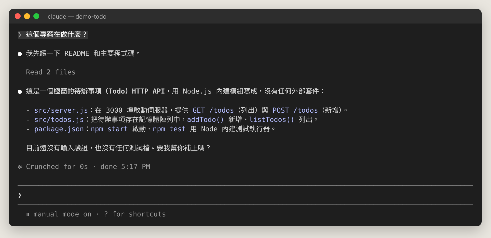
按 Ctrl+O 可以看到每一步的細節（讀了哪個檔、讀了幾行）：
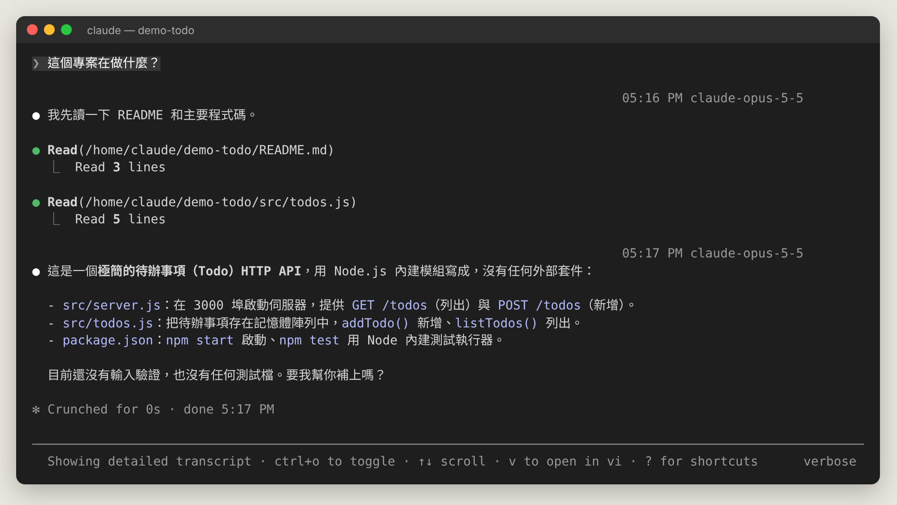
1.3 Session（工作階段）是什麼？
Session = 一段連續的對話，包含你說過的話、Claude 的回覆、它做過的所有動作。
| 你可以這樣想 | 說明 |
|---|---|
| 一個 session 就像一本「工作筆記本」 | 從你輸入 claude 開始，到你離開或 /clear 為止，都寫在同一本 |
每次 claude 都會開一本新筆記本 |
舊筆記本會保存在電腦裡（預設 30 天），可以用 /resume 或 claude -c 翻回來 |
| 同一個資料夾可以有很多本 | 例如「修登入 bug」一本、「寫新功能」一本，互不干擾 |
常用的 session 操作：
| 想做的事 | 怎麼做 |
|---|---|
| 開始新 session | 在專案資料夾輸入 claude |
| 回到最近一次的對話 | claude -c（continue） |
| 從清單挑一個舊對話 | claude -r 或在 session 中輸入 /resume |
| 幫 session 取名字 | /rename 登入功能，之後 claude -r 登入功能 就能找回 |
| 換一個新任務、清空對話 | /clear（舊對話仍可 /resume 找回） |
| 從某一點分岔出另一條路 | /branch |
下圖是 /resume 的選單，可以看到之前的 session（含名稱、時間、git 分支、大小）：
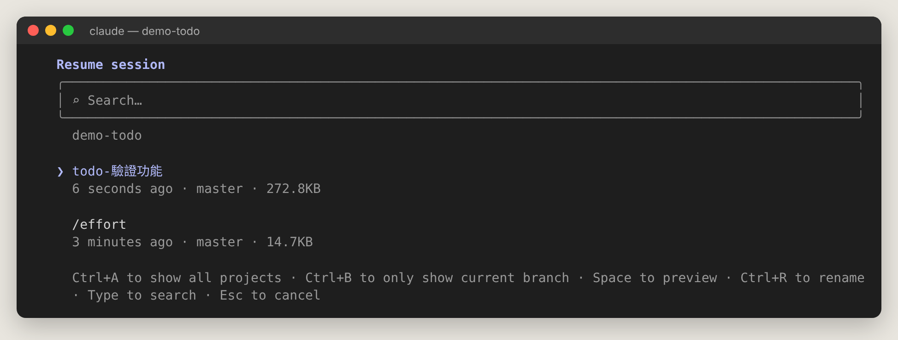
📌 重點：Claude 在新 session 中不會記得上一個 session 的對話內容。要讓它「每次都知道」的事，請寫進
CLAUDE.md（第 11 章）。
1.4 回合（Turn）
你送出一則訊息，到 Claude 回覆完畢並停下來等你，叫做一個回合。一個回合裡 Claude 可能會呼叫好幾次工具。回合結束時你會看到類似 ✻ Crunched for 12s 的耗時提示。
在 Claude 工作中，你仍然可以繼續輸入，訊息會排隊，等這個回合結束再送出；要立刻打斷，按 Esc。
1.5 Context（上下文）與 Context window（上下文視窗）
Context 是 Claude「此刻腦中能看到的所有東西」：系統說明、你的 CLAUDE.md、對話歷史、讀過的檔案內容、指令輸出……
Context window 是這個容量的上限。目前 Claude 的主力模型有 100 萬 token 的視窗。
💡 比喻：context window 像一張辦公桌。桌子很大，但東西堆太多，重要文件就容易被淹沒，Claude 的表現也會下降；而且桌上東西越多，每次「看一遍」的成本也越高。
用 /context 可以看到桌上目前放了什麼、還剩多少空間：
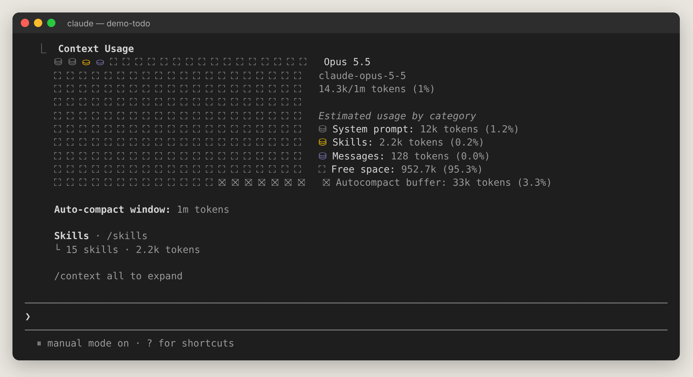
當 context 快滿時，Claude Code 會自動壓縮（auto-compact）：把較早的對話摘要成短短一段，騰出空間。你也可以手動 /compact。
1.6 Token 是什麼？
Token 是 AI 計算文字量的單位，大約是：英文 1 個單字 ≈ 1～1.3 token；中文 1 個字 ≈ 1～2 token。
Token 和兩件事有關：
- 容量：context window 以 token 計算。
- 費用／額度：用 API 付費是依 token 計價（例如 Opus 5.5 每百萬輸入 token 4 美元）；用訂閱方案則是消耗你的 5 小時與每週用量額度。
/usage 可以看本次花費與方案額度：
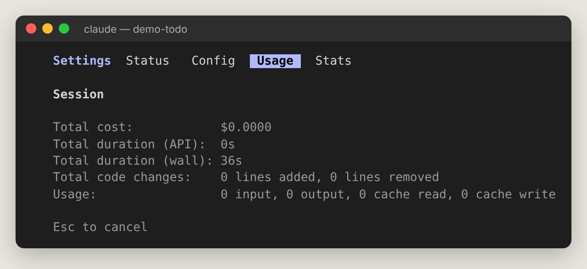
1.7 工具（Tools）
Claude 本身只會「想」和「說」，要動手就得透過工具。常見工具：
| 工具 | 做什麼 | 需要權限嗎 |
|---|---|---|
| Read | 讀取檔案 | 通常不用 |
| Glob／Grep | 找檔案、搜尋文字 | 通常不用 |
| Edit／Write | 修改／建立檔案 | 預設要問你 |
| Bash（Windows 為 PowerShell） | 執行終端機指令 | 預設要問你 |
| WebFetch／WebSearch | 讀網頁、搜尋網路 | 視網站而定 |
| Agent | 派一個「子代理」去做子任務 | 視情況 |
1.8 權限（Permissions）：Claude 什麼時候會先問你？
因為 Claude 能改你的檔案、跑指令，所以有權限系統保護你。當它要做有風險的事，會跳出確認框：
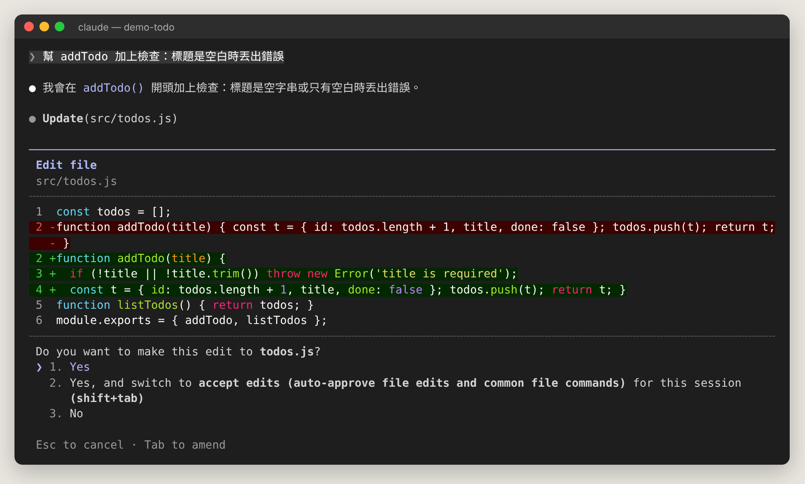
上圖中紅色是要刪除的行、綠色是要新增的行。你可以選：
- 1. Yes：只允許這一次
- 2. Yes, and switch to accept edits：這個 session 之後的修改都自動允許
- 3. No：拒絕（可以再告訴 Claude 你想怎麼改）
要跑指令時也一樣：
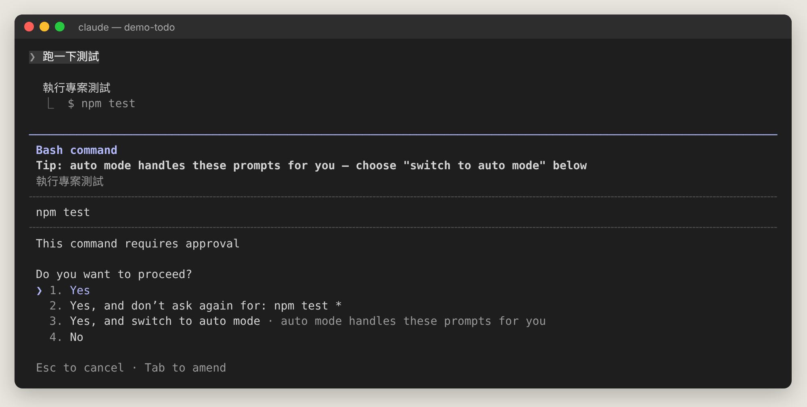
「Yes, and don't ask again for: npm test *」會把這條規則記住，以後同類指令不再問。
權限模式決定「問的頻率」，按 Shift+Tab 切換（第 9 章詳解）：
| 模式 | 一句話說明 | 適合 |
|---|---|---|
| Manual（手動） | 除了讀取，什麼都先問 | 剛開始用、重要專案 |
| Accept edits（自動接受編輯） | 改檔不問，跑指令會問 | 信任方向、想快一點 |
| Plan（規劃） | 只研究不修改，先給你計畫 | 大改動之前 |
| Auto（自動） | 由安全分類器把關，低風險直接做、高風險擋下 | 目前互動模式的預設 |
1.9 模型（Model）與推理強度（Effort）
- 模型是 Claude 的「大腦型號」。目前有 Opus 5.5（預設，聰明且相對便宜）、Sonnet 5.5（快又便宜）、Haiku 5.5（最快最便宜）、Fable 5.1（最強也最貴，需權限）。用
/model切換。 - Effort 是「這次要想多深」：low → medium → high → xhigh → max。越高越仔細但越慢、越耗額度。Opus 5.5 預設 medium。用
/effort調整。
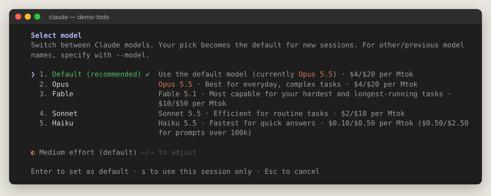
1.10 CLAUDE.md：給 Claude 的「專案說明書」
每次開新 session，Claude 都是「第一天上班」。CLAUDE.md 是放在專案根目錄的 Markdown 檔，Claude 每次啟動都會先讀，就像新同事的入職手冊。裡面寫：怎麼安裝、怎麼跑測試、程式風格、哪些檔案不能動……
輸入 /init 讓 Claude 自動幫你產生第一版。詳見第 11 章。
1.11 檢查點（Checkpoint）與回溯（Rewind）
Claude 每次改檔前都會自動存檔。改壞了？在空白輸入框連按兩下 Esc（或輸入 /rewind），選擇要回到哪一步：
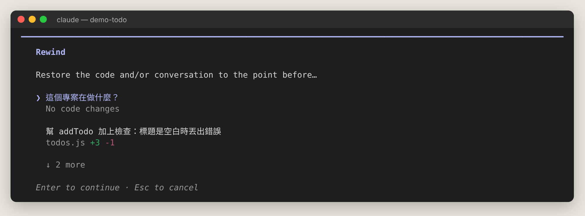
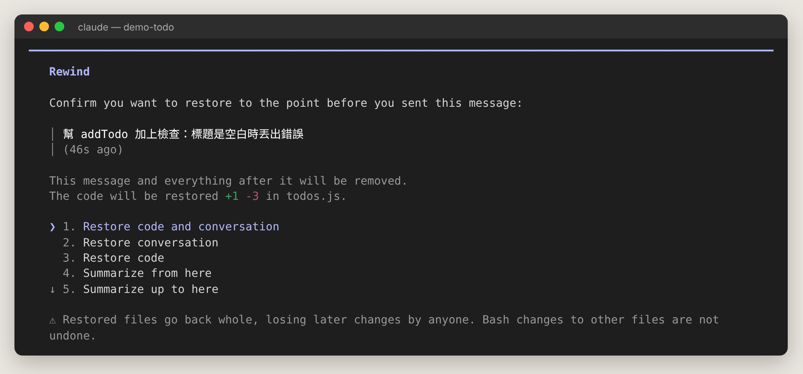
⚠️ 用 Bash 指令改的檔案（例如
sed -i、rm）不在檢查點裡，無法還原。重要專案請搭配 git 使用。
1.12 名詞速查表
| 名詞 | 白話解釋 |
|---|---|
| Session | 一段連續對話（一本筆記本） |
| Turn（回合） | 你說一次 → Claude 做完一次 |
| Context | Claude 此刻看得到的全部內容 |
| Context window | Context 的容量上限 |
| Token | 計算文字量與費用的單位 |
| Compact（壓縮） | 把舊對話摘要以騰出空間 |
| Tool（工具） | Claude 動手做事的方法（讀檔、改檔、跑指令） |
| Permission mode | 決定 Claude 何時要先問你 |
| Model | Claude 的大腦型號 |
| Effort | 這次要想多深 |
| CLAUDE.md | 專案說明書，每次自動讀 |
| Skill | 可重複使用的專業流程說明書（/名稱 呼叫） |
| Subagent（子代理） | Claude 派出去做子任務的分身 |
| Hook | 在特定時機自動執行的腳本 |
| MCP | 讓 Claude 連到外部工具（GitHub、資料庫…）的標準 |
| Plugin | 把以上擴充功能打包分享的套件 |
| Worktree | git 的「同一個 repo 開多個工作資料夾」功能，讓多個 Claude 平行工作不互相干擾 |
第 2 章 Chat 與 Code 差在哪？Claude 有哪些用法？
很多人第一次打開 Claude 桌面版會看到「Chat」和「Code」兩個分頁，不知道該用哪個。這章幫你一次弄清楚。
2.1 一張表看懂
| Chat（聊天） | Code（Claude Code） | |
|---|---|---|
| 本質 | 和 Claude 對話、一起思考與寫作 | 讓 Claude 在你的程式專案資料夾裡直接動手 |
| 能碰到你的檔案嗎 | 只能看你上傳的檔案 | 可以讀寫整個專案資料夾 |
| 能執行指令嗎 | 不能在你電腦上執行 | 可以（安裝套件、跑測試、git…） |
| 成果在哪 | 對話中的回答、文件、artifact 網頁 | 直接改好的程式碼、commit、PR |
| 適合 | 問問題、寫文章／信、分析資料、研究、腦力激盪、學概念 | 寫程式、修 bug、重構、寫測試、自動化、整理專案 |
| 用到的設定 | claude.ai 設定（個人偏好、記憶、connectors） | ~/.claude/settings.json、CLAUDE.md 等（本教學主要內容） |
💡 簡單判斷法：「我要的東西最後是一段文字／一份文件」→ Chat；「我要的東西最後是改好的程式碼／一個能跑的專案」→ Code。
同一個訂閱方案（Pro、Max、Team、Enterprise）的用量額度由 Chat 與 Claude Code 共用。
2.2 Chat 能做的事
- 一般對話：問答、解釋觀念、翻譯、寫作、改稿。
- 上傳檔案分析：PDF、Word、Excel、圖片、程式碼。
- Artifacts：讓 Claude 產生可分享的網頁、文件、簡報、試算表。
- Projects（專案）：把相關資料與指示集中，所有對話共用。
- 研究（Research）與網路搜尋：查最新資訊並附來源。
- Connectors：連 Google Drive、Gmail、Slack、Notion 等，讓 Claude 讀你自己的資料。
- 記憶：記住你的偏好與背景，下次對話自動帶入。
適合「還沒進入寫程式階段」的事，例如：先在 Chat 討論架構與需求，確定後再到 Code 實作。
2.3 Code 的各種入口
Claude Code 不只一種用法，以下都是同一套 Claude Code，共用相同的設定檔（雲端 session 例外）：
| 入口 | 長什麼樣子 | 適合誰 |
|---|---|---|
| 終端機（CLI） | 在終端機輸入 claude |
功能最完整，本教學截圖都來自這裡 |
| 桌面版 Code 分頁 | Claude 桌面 App 中的 Code 分頁，有圖形介面 | 不熟終端機的新手、喜歡視覺化 diff 的人 |
| VS Code / Cursor 擴充 | 編輯器側邊的聊天面板 | 平常就用 VS Code 的人 |
| JetBrains 外掛 | IntelliJ、PyCharm 等 | JetBrains 使用者 |
| 網頁版（claude.ai/code） | 在 Anthropic 雲端執行，關掉電腦也繼續跑 | 長任務、手機上派工 |
| 手機 App | 遠端遙控電腦上的 session，或開雲端 session | 外出時查看進度 |
| Slack | 在頻道 @Claude 派工 | 團隊協作 |
| GitHub Actions | 在 PR／issue 中 @claude |
自動化審查、修 bug |
2.4 桌面版 Code 分頁介面導覽
桌面版把終端機的功能做成按鈕與面板，主要元素：
| 介面元素 | 位置 | 功能 | 對應 CLI 操作 |
|---|---|---|---|
| + New（或 Ctrl+N／Cmd+N） | 左側欄上方 | 開新 session | 執行 claude |
| Session 清單 | 左側欄 | 所有對話，可同時跑多個 | /resume、Agent view |
| 環境選擇器 | 輸入框下方第一個 | 在哪裡執行：Local（本機）、Cloud（雲端）、SSH（遠端主機）、WSL（Windows） | --cloud 等 |
| 資料夾選擇 | 輸入框下方 | 選要工作的專案資料夾 | cd 專案 |
| 權限模式選擇器 | 輸入框下方 | Manual／Accept edits／Plan／Auto／Bypass | Shift+Tab（桌面版用 Ctrl/Cmd+Shift+M） |
| 模型選擇 | 輸入框下方 | 切換模型 | /model |
| Worktree 按鈕 | 開始 session 前 | 在獨立 git worktree 中工作 | claude -w |
| Changes（差異）面板 | 標題列／Ctrl/Cmd+Shift+D | 檢視改動、在行上留言請 Claude 修 | /diff |
| Browser 面板 | Ctrl/Cmd+Shift+B | 內建瀏覽器，Claude 可開 dev server 驗證畫面 | --chrome |
| Terminal 面板 | Ctrl+` | 與 session 共用環境的終端機 | — |
| Files、Plan、Background tasks 面板 | 標題列 ⋮ | 檔案編輯、計畫、背景工作 | /tasks |
| iOS Simulator 面板 | （macOS） | 讓 Claude 操作模擬器測試 App | — |
| Settings → Code（或 Claude Code） | 設定頁 | 提示建議、Worktree 位置與分支前綴、合併後自動封存、Remote Control、電腦操作等 | /config |
桌面版與 CLI 的差異：
- 桌面版沒有
dontAsk模式；/config在桌面版會開啟設定頁而不是終端機選單。 - 桌面版會自行設定部分環境變數（例如本機 session 的 API 逾時），所以在設定檔改這些變數可能無效。
- 雲端 session 只支援 Accept edits、Plan、Auto 三種模式。
- 桌面版的
.claude/launch.json可設定 dev server，讓 Claude 自動開瀏覽器驗證改動。
📷 關於截圖：桌面 App 無法被自動化工具控制，本教學的截圖皆擷取自同版本（v2.1.312）的終端機 CLI。桌面版的對話內容、權限詢問、差異顯示與 CLI 是同一套引擎，看懂 CLI 畫面，桌面版自然看得懂。
2.5 Claude Code 能幫你做什麼？（實際例子）
| 類型 | 你可以這樣說 |
|---|---|
| 理解專案 | 「這個專案在做什麼？入口在哪？畫出資料流」 |
| 修 bug | 「使用者輸入錯誤密碼後畫面空白，幫我找原因並修好」 |
| 新功能 | 「在註冊表單加上 email 格式驗證，並寫測試」 |
| 重構 | 「把 auth 模組從 callback 改成 async/await」 |
| 測試 | 「幫 utils/ 底下沒有測試的函式補上單元測試」 |
| Git | 「幫我寫 commit 訊息」「解這個 merge conflict」「開 PR」 |
| 文件 | 「依目前程式更新 README 的安裝說明」 |
| 自動化 | 「每天早上檢查 CI 狀態並整理失敗原因」 |
| 非程式工作 | 整理資料夾、批次改檔名、處理 CSV、寫腳本 |
2.6 其他你該知道的基礎知識
- 終端機（Terminal）：輸入文字指令操作電腦的視窗。macOS 是「終端機」App；Windows 是 PowerShell 或 Windows Terminal。第 3 章會教最基本的操作。
- 專案資料夾：Claude Code 以「你啟動它的資料夾」為工作範圍。請先
cd到你的專案再執行claude。 - Git：版本控制工具，能記錄每次修改、隨時還原。強烈建議專案都用 git 管理，Claude 改壞了可以輕鬆回復。
- 訂閱 vs API：用 claude.ai 訂閱登入，費用包含在月費內（有額度上限）；用 Claude Console API key，則依 token 用量計費。
- 安全意識：Claude Code 能執行指令，請只在你信任的資料夾使用；不要把密碼、金鑰寫在對話裡；重要操作仔細看確認框。
第 3 章 安裝、登入與第一次啟動
3.1 終端機 30 秒入門
Claude Code 主要在終端機中使用。你只需要會三件事：
| 指令 | 作用 | 例子 |
|---|---|---|
cd 路徑 |
進入某個資料夾 | cd ~/projects/my-app（Windows：cd C:\Users\你\projects\my-app） |
ls（Windows PowerShell 也可用 dir） |
列出目前資料夾內容 | ls |
pwd |
顯示目前在哪個資料夾 | pwd |
開啟方式：macOS 按 Cmd+Space 搜尋「終端機」；Windows 按 Win 搜尋「PowerShell」或「Terminal」。
💡 不想用終端機？可以直接用 Claude 桌面版的 Code 分頁（第 2 章），概念完全相同。
3.2 安裝
需要：一個 Claude 訂閱（Pro／Max／Team／Enterprise）或 Claude Console 帳號。
macOS／Linux／WSL：
curl -fsSL https://claude.ai/install.sh | bash
Windows PowerShell（提示字元是 PS C:\>）：
irm https://claude.ai/install.ps1 | iex
Windows CMD（提示字元是 C:\>）：
curl -fsSL https://claude.ai/install.cmd -o install.cmd && install.cmd && del install.cmd
原生安裝版會在背景自動更新。也可用
brew install --cask claude-code（macOS）或winget install Anthropic.ClaudeCode（Windows），但這兩種不會自動更新。
裝好後開一個新的終端機視窗，確認版本：
claude --version
# 2.1.312 (Claude Code)
Windows 建議另外安裝 Git for Windows，Claude 才能使用 Bash 工具；沒裝的話會改用 PowerShell。
常見安裝問題
| 狀況 | 解法 |
|---|---|
claude: command not found |
關掉終端機重開；仍不行請依官方「Troubleshoot installation」把安裝路徑加入 PATH |
'irm' is not recognized |
你在 CMD，請改用 CMD 的那行指令或打開 PowerShell |
The token '&&' is not a valid statement separator |
你在 PowerShell，請改用 PowerShell 的那行 |
3.3 第一次啟動
cd 你的專案資料夾
claude
第一次會引導你在瀏覽器登入。登入方式：
- Claude 訂閱（推薦）：用量含在月費。
- Claude Console：API 預付，依用量計費。
- 公司的雲端供應商（Bedrock、Vertex、Foundry）或公司閘道：依公司指示。
信任資料夾
在一個新資料夾第一次啟動時，會問你是否信任這個資料夾：
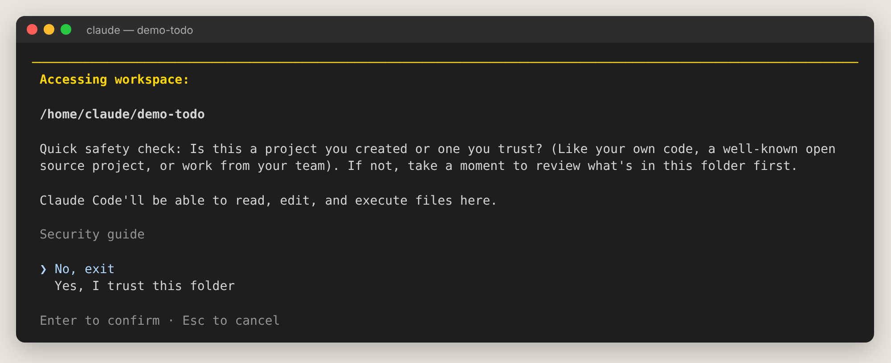
選 Yes, I trust this folder。只有你自己的專案、知名開源專案或團隊專案才該信任；陌生人給的資料夾請先檢查內容（裡面的設定檔可能讓 Claude 執行指令）。
主畫面
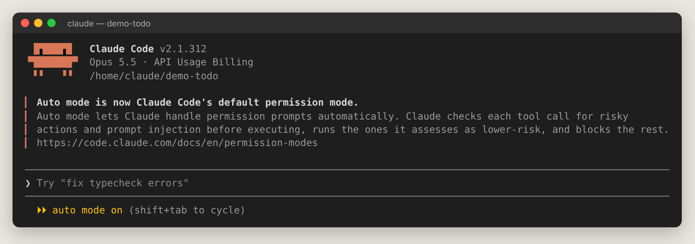
| 區域 | 說明 |
|---|---|
| 左上 Logo 旁 | 版本、目前模型（Opus 5.5）、帳號類型、工作資料夾 |
| 中間 | 對話區（目前顯示 Auto mode 已成為預設的說明） |
◐ medium · /effort |
目前推理強度，可用 /effort 調整 |
❯ 輸入框 |
在這裡打字；灰色字是建議範例 |
| 最下方狀態列 | 目前權限模式（⏵⏵ auto mode on）與提示（shift+tab to cycle、← for agents） |
3.4 更新與版本
| 想做的事 | 指令 |
|---|---|
| 手動更新到最新版 | claude update |
| 查看新版本有什麼 | session 中輸入 /release-notes |
| 改用較穩定的頻道 | /config → Auto-update channel → stable |
| 安裝特定版本 | claude install 2.1.300 |
| 診斷安裝問題 | claude doctor（終端機）或 /doctor（session 中） |
3.5 從其他 AI 工具搬家
用過 Codex、Gemini CLI 或 Cursor？可以一鍵匯入它們的設定（指示檔、MCP、指令、subagent、skills）：
claude import cursor --dry-run # 先預覽
/import codex # 在 session 中匯入
第 4 章 手把手：你的第一個 Claude Code 工作流程
本章用一個小小的待辦事項 API 專案（
demo-todo）示範從「看懂專案」到「修改、測試、檢查、回溯」的完整流程。所有截圖都是真實畫面。
4.1 準備：建立 CLAUDE.md
進入專案後，第一件事建議執行：
/init
Claude 會分析專案並產生 CLAUDE.md（專案說明書），裡面記錄建置指令、測試方式、程式風格。以後每次開 session 都會自動讀它。
4.2 第一步：先讓 Claude 讀懂專案
在輸入框打字（中文完全沒問題）：
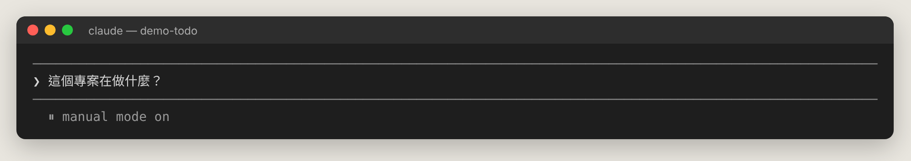
按 Enter 送出。Claude 會先讀檔，再回答：
看到 Read 2 files 代表它讀了兩個檔案。想看細節就按 Ctrl+O：
💡 新手技巧：在要它改東西之前，先讓它「讀、解釋」。它理解得越正確，後面改得越好。
4.3 第二步：請它修改程式
這是最重要的一個畫面，請仔細看：
● Update(src/todos.js)：Claude 要修改哪個檔案。- 中間的差異：紅色
-是要刪掉的行、綠色+是要加上的行。 - 底部選項： - 1. Yes：同意這次修改。 - 2. Yes, and switch to accept edits：之後這個 session 的修改都不再問。 - 3. No：拒絕。拒絕後可以直接告訴它你要怎麼改。 - Tab（Tab to amend）：同意的同時附上一段補充說明。
選 Yes 後，Claude 完成修改並說明：
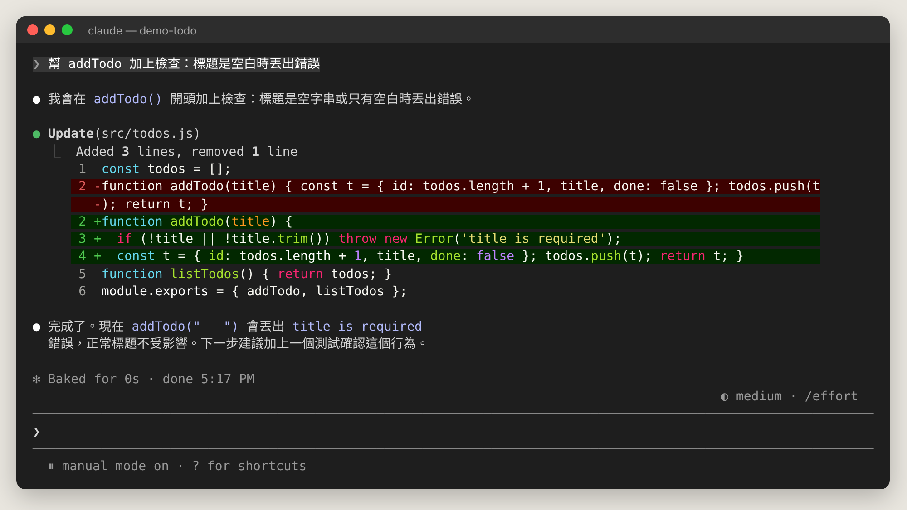
4.4 第三步：讓它跑指令
執行指令前同樣會詢問。選項 2. Yes, and don't ask again for: npm test * 會記住這條規則（寫進 .claude/settings.local.json），以後跑測試不再問。
4.5 第四步：檢查改了什麼
輸入 /diff 看所有改動（含 Claude 改的）：
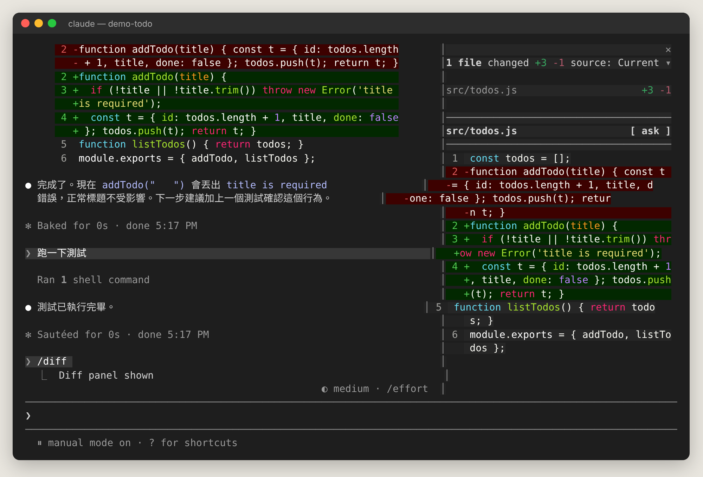
4.6 改壞了？回到過去
在空白輸入框按兩下 Esc，或輸入 /rewind：
每則訊息旁顯示該點之後的程式改動（例如 todos.js +3 -1）。選一則按 Enter：
| 選項 | 效果 |
|---|---|
| Restore code and conversation | 程式碼與對話都回到那一刻 |
| Restore conversation | 只回溯對話，程式碼保留 |
| Restore code | 只還原程式碼，對話保留 |
| Summarize from here／up to here | 不刪除，而是把那段之後／之前的對話摘要壓縮 |
4.7 第五步：收尾
- 讓 Claude 幫你 commit：「幫我寫一個清楚的 commit 訊息並 commit」。
- 換下一個不相關的任務前輸入
/clear開新對話（舊的可用/resume找回）。 - 給 session 取名：
/rename todo-驗證功能。
4.8 推薦工作節奏
① 探索：「先讀相關檔案，解釋一下現在怎麼運作，先不要改」
② 計畫：Shift+Tab 切到 Plan 模式，或輸入 /plan 加任務描述
③ 實作：核准計畫後讓它動手
④ 驗證：跑測試、/code-review、/verify
⑤ 檢查：/diff 看過再 commit
4.9 寫出好提示的技巧
| ❌ 模糊 | ✅ 具體 |
|---|---|
| 修 bug | 輸入錯誤密碼後畫面變空白，請找出原因並修好，修完跑 npm test 確認 |
| 加測試 | 幫 src/todos.js 的 addTodo 寫單元測試，包含空白標題的情況 |
| 改好看一點 | 把首頁按鈕改成圓角、主色 #c2562f，手機版寬度 100% |
原則：說清楚目標、限制、怎麼驗證完成。大任務拆成條列步驟。可以貼截圖（Ctrl+V）或用 @檔名 指定檔案。
第 5 章 介面導覽與快捷鍵
5.1 輸入框的四個「魔法開頭」
| 開頭 | 作用 | 例子 |
|---|---|---|
/ |
指令或 skill 選單 | /help、/model、/clear |
! |
直接執行終端機指令，輸出會加入對話 | ! git status |
@ |
指定檔案或資料夾（自動完成） | 看一下 @src/todos.js |
?（空白時） |
顯示快捷鍵說明 | — |
輸入 / 的指令選單（繼續打字可篩選）：
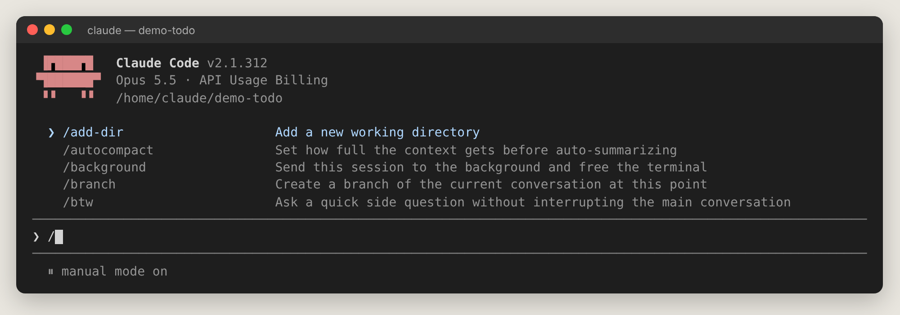
! 進入 shell 模式，輸入框左側變成 !、底部顯示 ! for shell mode：
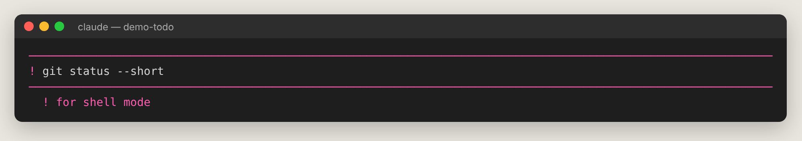
@ 提及檔案，會跳出路徑建議，按 Tab 接受：
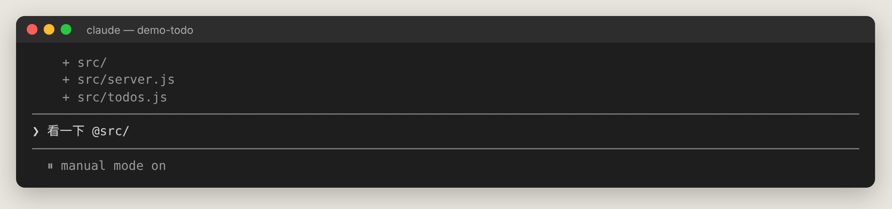
? 顯示快捷鍵：
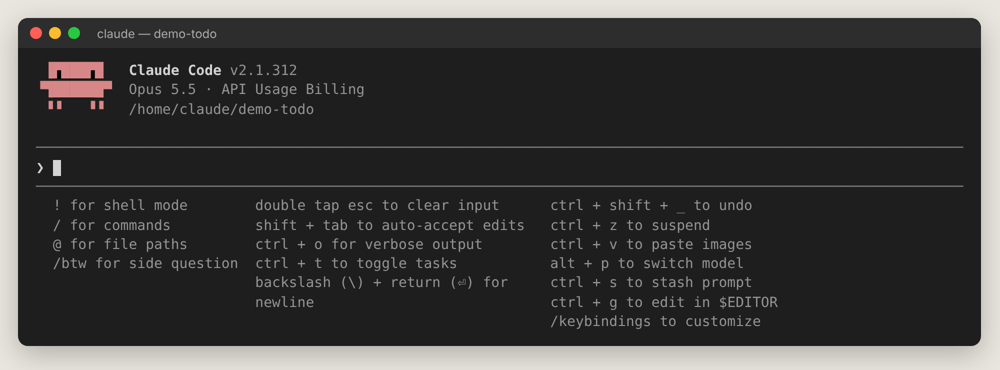
5.2 權限模式指示（畫面最下方）
按 Shift+Tab 循環切換，最下方會即時顯示目前模式：
Manual（手動）——除了讀取都會問你：
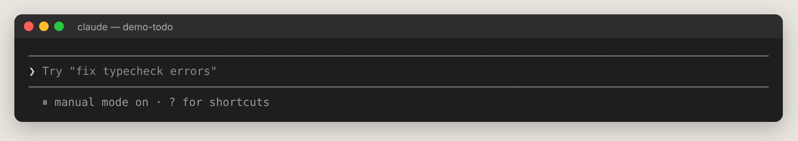
Accept edits（自動接受編輯）——改檔不問：
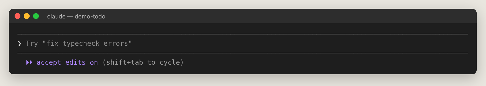
Plan（規劃）——只研究、先出計畫：
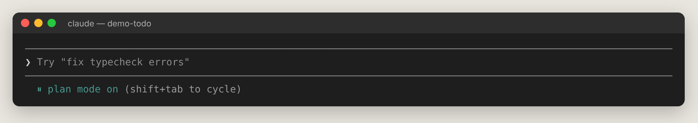
Auto（自動）——分類器把關，目前的預設：
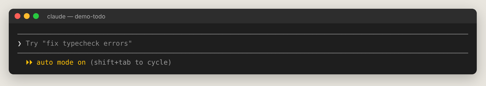
5.3 最常用的快捷鍵
| 按鍵 | 功能 | 新手何時用 |
|---|---|---|
| Enter | 送出 | 每次 |
| \ + Enter | 換行（不送出） | 打多行訊息；執行 /terminal-setup 後可用 Shift+Enter |
| Esc | 中斷 Claude 目前的動作 | 發現方向不對時，立刻停 |
| Esc Esc | 有字時清空輸入；空白時開 Rewind | 改壞了想回去 |
| Shift+Tab | 切換權限模式 | 想先規劃或加快速度 |
| ↑ / ↓ | 叫出之前輸入過的訊息 | 重送或修改上一句 |
| Ctrl+C | 中斷；空白時按兩次離開 | 結束 Claude Code |
| Ctrl+D ×2 | 離開 | 結束 |
| Ctrl+O | 顯示詳細過程（transcript） | 想知道它讀了什麼、跑了什麼 |
| Ctrl+T | 顯示／隱藏 Claude 的待辦清單 | 長任務追進度 |
| Ctrl+B | 把正在跑的指令或子代理丟到背景 | 跑很久的伺服器、測試 |
| Ctrl+G | 用外部編輯器寫長訊息 | 要貼很長的需求 |
| Ctrl+R | 搜尋輸入歷史 | 找以前下過的指令 |
| Ctrl+S | 暫存目前草稿，再按一次還原 | 臨時插問一個問題 |
| Ctrl+V（Windows 也可 Alt+V） | 貼上圖片 | 貼錯誤截圖、設計稿 |
| Ctrl+L | 重繪畫面 | 畫面亂掉 |
| Alt+P（Mac：Option+P） | 切換模型 | — |
| Alt+O（Mac：Option+O） | 切換 Fast mode | — |
| ←（空白時） | 把 session 放到背景並打開 Agent view | 想同時開好幾個任務 |
| Ctrl+Z | 暫停（macOS/Linux，用 fg 回來） |
— |
macOS 使用者：要用 Option 系列快捷鍵，請在終端機設定中開啟「Option 當作 Meta 鍵」。
5.4 好用的互動功能
- 訊息排隊：Claude 工作中你可以繼續打字送出，訊息會排隊；按 Ctrl+Enter 立刻插隊送出。
/btw 問題：問一個不會進入對話歷史的旁支問題，例如「/btw 這個 API 的英文全名是什麼？」。/help：說明頁，有 General、Commands、Custom commands 分頁：
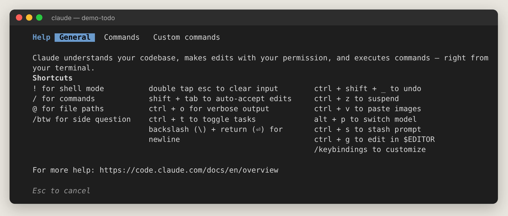
- Session recap：離開 5 分鐘以上回來，會顯示期間發生了什麼；也可
/recap手動產生。 - 全螢幕模式：
/tui fullscreen啟用不閃爍介面；在其中/focus只顯示重點。 - Vim 模式：
/config→ Editor mode 改成 vim。 - 語音輸入：
/voice（需 claude.ai 帳號）。
5.5 Agent view：同時管理多個 Claude
在空白輸入框按 ←，目前對話會移到背景，並打開 Agent view：
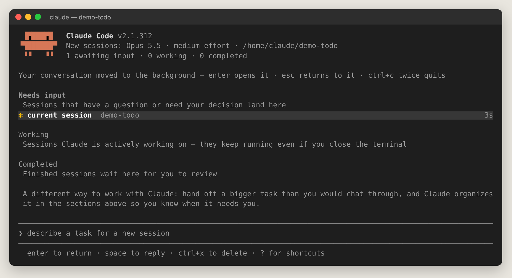
- Needs input：等你回答的 session
- Working：正在工作中（關掉終端機也會繼續跑）
- Completed：完成待你檢查
- 最下面輸入框直接描述新任務，就會開一個新的背景 session；Enter 進入某個 session、Space 快速預覽並回覆。
詳見第 13 章。
5.6 背景工作與 /tasks
/tasks 列出本 session 在背景跑的指令與子代理：
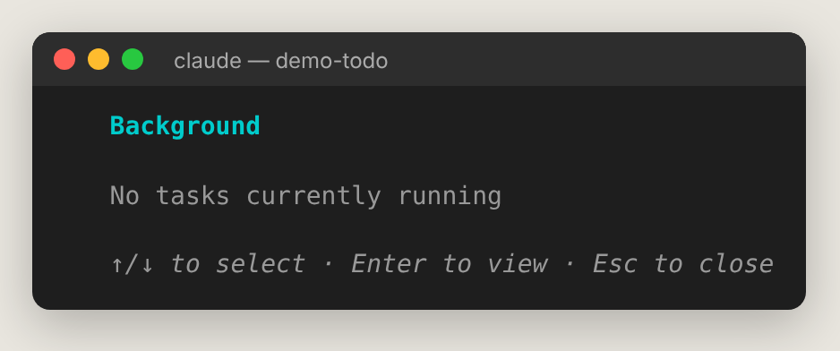
第 6 章 斜線指令大全
在輸入框打
/就會跳出指令選單，繼續打字可以篩選。下面依「什麼時候用」分類。標示 🧩 的是內建 skill（交給 Claude 執行的提示），🔀 是內建工作流程。可用的指令會依方案、平台略有不同。
6.1 新手最常用的 12 個
| 指令 | 做什麼 | 例子 |
|---|---|---|
/help |
說明與快捷鍵 | /help |
/init |
自動產生 CLAUDE.md | /init |
/clear |
開新對話（舊的可找回） | /clear |
/resume |
回到以前的對話 | /resume |
/model |
換模型 | /model sonnet |
/config |
設定面板 | /config |
/plan |
進入規劃模式 | /plan 幫登入加上兩步驟驗證 |
/diff |
看改了什麼 | /diff |
/rewind |
回到之前的狀態 | /rewind |
/compact |
壓縮對話騰出空間 | /compact 保留 API 設計的決定 |
/usage |
看花費與額度 | /usage |
/doctor 🧩 |
健檢並修正設定問題 | /doctor |
6.2 專案設定與健檢
| 指令 | 用途 |
|---|---|
/init |
分析專案、產生 CLAUDE.md。設環境變數 CLAUDE_CODE_NEW_INIT=1 會用互動流程連 skills、hooks 一起設定 |
/memory |
編輯 CLAUDE.md、開關自動記憶 |
/config [key=value]（別名 /settings） |
設定面板；也能 /config theme=dark 直接改 |
/update-config 描述 🧩 |
用一句話請 Claude 改 settings.json，例：/update-config 允許 npm test 不用問 |
/permissions |
管理允許／詢問／禁止規則 |
/fewer-permission-prompts 🧩 |
分析你的使用紀錄，自動把常用唯讀指令加入白名單 |
/auto-mode-setup |
讓 Auto mode 認識你的環境（哪些是測試機、哪些分支能推） |
/doctor（別名 /checkup）🧩 |
全面健檢；/doctor prompt-audit 檢查你的指示檔寫得好不好 |
/status |
版本、模型、帳號、載入的設定檔 |
/hooks、/mcp、/plugin、/skills、/agents |
檢視／管理各類擴充 |
/skill-doctor |
看每個 skill 吃多少 context、多常被用 |
/reload-skills、/reload-plugins |
不重開就重新載入 |
/terminal-setup |
安裝 Shift+Enter 換行等終端機設定 |
/statusline 描述 |
自訂狀態列，例：/statusline 顯示模型與 git 分支 |
/theme、/output-style、/color、/tui、/keybindings |
外觀與按鍵 |
/import codex（或 gemini、cursor） |
從其他 AI 工具匯入設定 |
/powerup |
互動式小課程，學新功能 |
6.3 工作進行中
| 指令 | 用途 |
|---|---|
/plan [描述] |
進入規劃模式 |
/model [模型] |
換模型（s 只用於本次） |
/effort [low…max｜auto｜ultracode] |
調整推理強度 |
/fast [on｜off] |
開關 Fast mode（更快、較貴） |
/advisor [模型｜off] |
關鍵時刻諮詢另一個更強的模型 |
/context |
看 context 用量 |
/compact [重點] |
摘要壓縮對話 |
/autocompact [auto｜500k] |
設定何時自動壓縮 |
/btw 問題 |
旁支問題，不進入對話歷史 |
/goal 條件 |
設定目標，Claude 會持續工作直到達成，例：/goal 所有測試通過 |
/loop [間隔] [提示] 🧩 |
定時重複執行，例：/loop 5m 檢查部署是否完成 |
/add-dir 路徑 |
加入額外可存取的資料夾 |
/cd 路徑 |
把 session 移到另一個資料夾（保留對話） |
/tasks |
看背景指令與子代理 |
/subtask 任務 |
派一個繼承完整對話的子代理在背景做，結果回到這裡 |
/batch 指示 🧩 |
大改動拆成 5–30 份平行處理，例：/batch 把 src/ 從 JS 轉成 TS |
/deep-research 問題 🔀 |
多來源網路研究並交叉驗證 |
/workflows |
查看／暫停／存檔動態工作流程 |
/chrome、/claude-in-chrome 任務 🧩 |
讓 Claude 操作你的 Chrome 測網頁 |
/run、/verify 🧩 |
實際啟動 app 驗證改動 |
/debug [描述] 🧩 |
開除錯日誌並分析 |
/claude-api 🧩 |
開發 Claude API 應用的輔助 |
/design、/slides、/dataviz 🧩 |
設計畫板、簡報、圖表設計 |
6.4 收尾與交付
| 指令 | 用途 |
|---|---|
/diff |
檢視所有改動 |
/code-review [等級] [--fix] [--comment] [PR編號]（別名 /review）🧩 |
找 bug；--fix 直接修；--comment 貼到 PR；ultra 走雲端深度審查 |
/ultrareview |
雲端多代理深度審查 |
/security-review |
資安審查 |
/simplify 🧩 |
找可簡化、可重用的地方並修改 |
/autofix-pr |
開雲端 session 盯著 PR，CI 失敗就自動修 |
/install-github-app、/install-slack-app |
安裝 GitHub／Slack 整合 |
/copy [N] |
複製回應或其中的程式碼區塊 |
/export [檔名] |
匯出對話成文字檔 |
/artifacts |
列出你的 artifacts |
6.5 Session 管理
| 指令 | 用途 |
|---|---|
/clear [名稱]（別名 /new、/reset） |
開新對話 |
/resume [名稱或 ID] |
回到舊對話 |
/rename [名稱] |
命名 session |
/branch |
從這點分岔並切換過去（原對話保留） |
/fork [提示] |
複製成新的背景 session，你繼續在這裡 |
/background（/bg） |
把整個 session 丟到背景 |
/rewind（/undo、/checkpoint） |
回溯 |
/recap |
一行摘要這個 session |
/exit（/quit） |
離開 |
/teleport、/remote-control（/rc）、/desktop |
雲端 session 拉回本機、讓手機遙控、轉到桌面版 |
/schedule（/routines） |
建立雲端排程任務 |
/list-agents（/peers） |
列出可傳訊息的其他 session |
6.6 帳號與其他
| 指令 | 用途 |
|---|---|
/usage（/cost、/stats） |
花費、額度、各功能用量 |
/insights |
產生你的使用習慣分析報告 |
/rate-limit-options、/usage-credits、/upgrade |
額度用完時的選項 |
/login、/logout |
切換帳號 |
/team-onboarding |
依你的使用紀錄產生給隊友的上手指南 |
/release-notes |
看版本更新內容 |
/bug、/feedback |
回報問題 |
/mobile |
手機 App 下載 QR code |
/voice |
語音輸入 |
⚠️ 已移除的舊指令：
/vim（改用/config→ Editor mode）、/pr-comments（直接請 Claude 看 PR 留言）、/ultraplan（改用 plan 模式）。
6.7 自己做指令
任何 skill 都會變成 /名稱 指令。在 .claude/skills/發版/SKILL.md 寫好流程，就能輸入 /發版 使用。詳見第 12 章。
第 7 章 /config 設定面板：每個選項逐一說明
在 Claude Code 中輸入
/config（或/settings）就會打開設定面板。這章把面板上每一個選項都說明清楚，並告訴你對應的settings.json寫法。
7.1 面板長什麼樣子
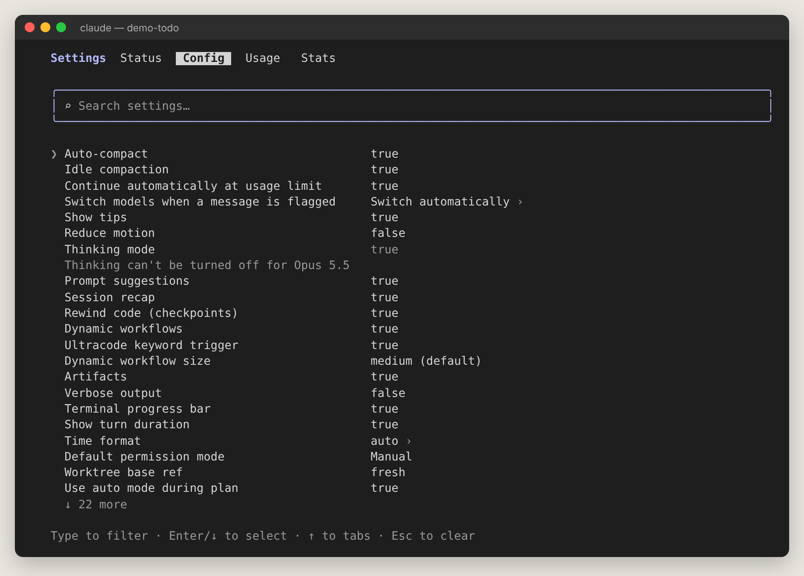
最上方有五個分頁：
| 分頁 | 內容 |
|---|---|
| Settings | 標題（目前所在的設定面板） |
| Status | 版本、session、模型、帳號、已載入的設定來源 |
| Config | 所有可調整的選項（本章重點） |
| Usage | 本次 session 成本、方案額度 |
| Stats | 使用統計 |
操作方式：
- 一打開游標在搜尋框，直接打字就能篩選選項（例如輸入
theme）。 - ↓ 進入清單，Enter 或 Space 切換 true/false 或打開子選單（有
›的項目）。 - ↑ 回到分頁列，←/→ 切換分頁，Esc 關閉。
- 也可以不開面板，直接輸入
/config 選項=值，例如/config verbose=true。/config --help列出可用的選項名稱。
搜尋篩選的樣子：
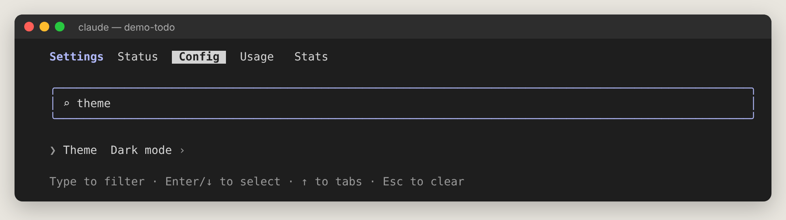
完整清單（v2.1.312）：
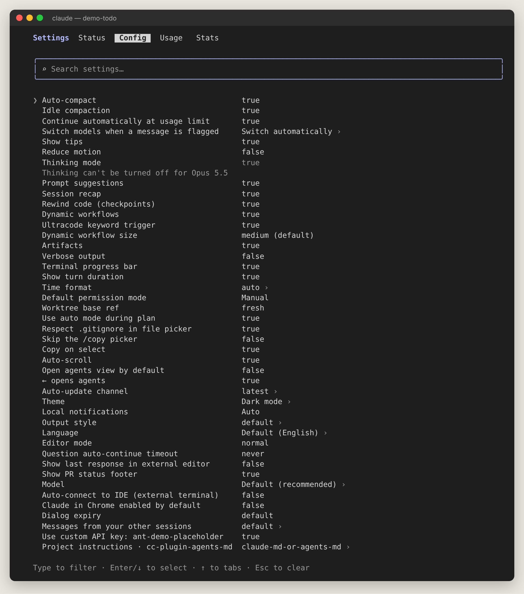
你在面板上的變更大多存到
~/.claude/settings.json（對所有專案生效）；少數（例如 Show tips）存到專案的.claude/settings.local.json；少數全域選項存到~/.claude.json。
7.2 Status 與 Usage 分頁
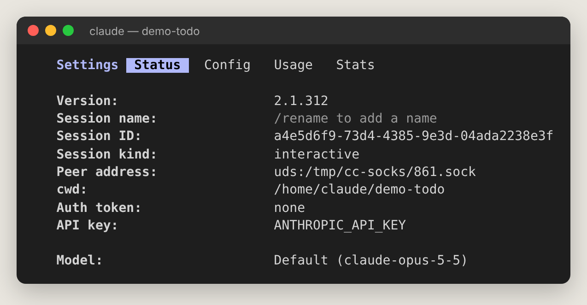
| 欄位 | 意思 |
|---|---|
| Version | Claude Code 版本 |
| Session name / ID | 本 session 的名稱（/rename 設定）與唯一識別碼 |
| Session kind | interactive（互動）或背景 session |
| cwd | 目前工作資料夾 |
| Auth token / API key | 用哪種方式登入 |
| Model | 目前模型 |
| Setting sources | 實際載入了哪些設定檔（設定沒生效時先看這裡） |
Usage 顯示：總花費、API 時間、實際經過時間、程式碼增刪行數、token 用量（輸入、輸出、快取讀寫）。
7.3 Config 分頁：逐項說明
下表依面板上的順序排列。「設定檔寫法」可以直接貼進 ~/.claude/settings.json 的大括號裡。
對話與 context
| 面板選項 | 預設 | 說明與何時調整 | 設定檔寫法 |
|---|---|---|---|
| Auto-compact | true | context 快滿時自動把舊對話摘要壓縮。建議保持開啟，關掉後 context 滿了會直接出錯。 | "autoCompactEnabled": true |
| Idle compaction | true | 超過 20 萬 token 的長對話閒置約 54 分鐘時，先壓縮再讓快取過期，回來時比較省額度。不希望它自動摘要就關掉。 | "idleCompaction": false |
| Continue automatically at usage limit | true | 訂閱額度用完時，等額度重置後自動繼續剛才的任務。關掉則跳出選單讓你選。 | "autoContinueAtUsageLimit": true |
| Switch models when a message is flagged | Switch automatically | 訊息被安全機制標記時：自動換模型繼續，或「Ask each time」每次問你。 | "switchModelsOnFlag": false（= 每次問） |
| Thinking mode | true | 延伸思考。Opus 5.5 等新模型無法關閉（畫面會顯示「Thinking can't be turned off」）。 | "alwaysThinkingEnabled": true |
| Prompt suggestions | true | 回合結束後在輸入框顯示灰色的「你可能想說的下一句」，按 Tab 採用。 | "promptSuggestionEnabled": false |
| Session recap | true | 離開 5 分鐘以上回來時，顯示期間發生的事。 | "awaySummaryEnabled": false |
| Rewind code (checkpoints) | true | 改檔前存快照，讓 /rewind 能還原程式碼。建議保持開啟。 |
"fileCheckpointingEnabled": true |
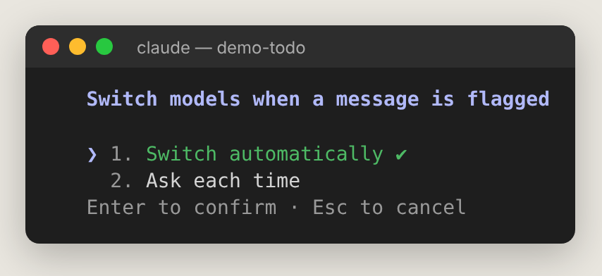
多代理工作流程
| 面板選項 | 預設 | 說明 | 設定檔寫法 |
|---|---|---|---|
| Dynamic workflows | true（Pro 需手動開） | 允許 Claude 寫腳本一次指揮多個子代理處理大任務（第 13 章）。 | "enableWorkflows": true |
| Ultracode keyword trigger | true | 提示中出現 ultracode 就啟動工作流程。常誤觸就關掉。 |
"workflowKeywordTriggerEnabled": false |
| Dynamic workflow size | medium | 工作流程的代理數量建議：small（<5）、medium（<10）、large（<50）、unrestricted。越大越耗額度。 | "workflowSizeGuideline": "small" |
| Artifacts | true | 允許 Claude 把成果發布成可分享的網頁（artifact）。 | "enableArtifact": false |
顯示
| 面板選項 | 預設 | 說明 | 設定檔寫法 |
|---|---|---|---|
| Show tips | true | 工作中 spinner 下方的小提示。 | "spinnerTipsEnabled": false |
| Reduce motion | false | 減少動畫（對眼睛敏感或用螢幕閱讀器時）。 | "prefersReducedMotion": true |
| Verbose output | false | 永遠顯示完整工具輸出（等於一直開著 Ctrl+O）。 | "verbose": true |
| Terminal progress bar | true | 在支援的終端機分頁上顯示進度。 | "terminalProgressBarEnabled": false |
| Show turn duration | true | 回合結束顯示「Cooked for 12s」。 | "showTurnDuration": false |
| Time format | auto | 時間格式：auto、12-hour、24-hour、24-hour-utc。 | "timeFormat": "24-hour" |
| Theme | Dark mode | 配色主題（見下圖）。 | "theme": "light" |
| Output style | default | 回覆風格（見下圖與第 12 章）。 | "outputStyle": "Concise" |
| Language | English | Claude 回覆與語音的語言。想要中文回覆就設這個。 | "language": "繁體中文" |
| Show PR status footer | true | 底部顯示目前分支 PR 的審查狀態。 | "prStatusFooterEnabled": false |
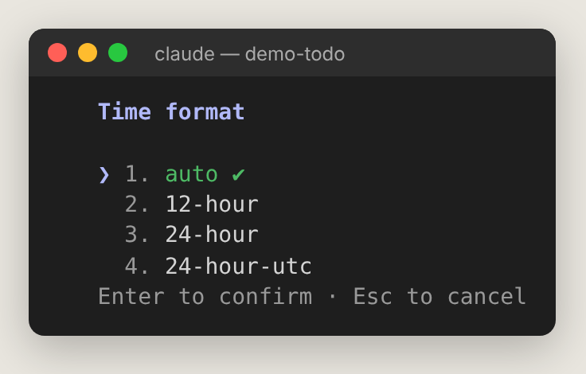
Theme：包含自動跟隨終端機、深色、淺色、色盲友善、只用 ANSI 顏色等版本，下方即時預覽 diff 顏色；Ctrl+T 可關閉語法上色。
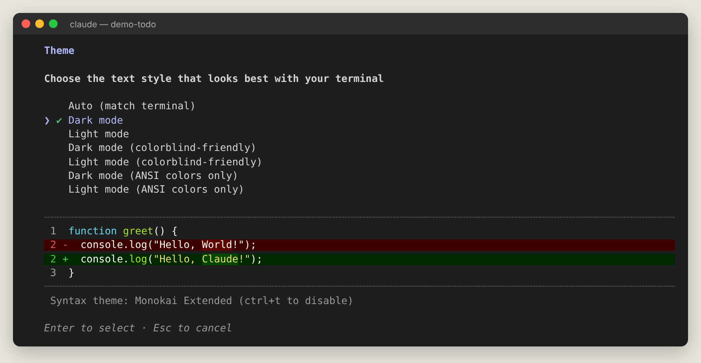
Output style：
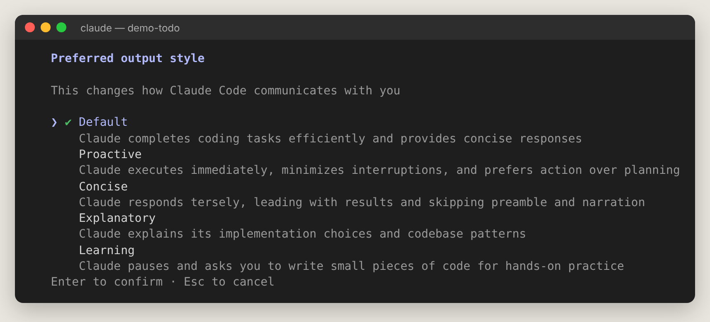
| 風格 | 適合 |
|---|---|
| Default | 一般使用 |
| Proactive | 想讓 Claude 少問、直接做 |
| Concise | 嫌回覆太長 |
| Explanatory | 想邊做邊學、了解為什麼這樣寫 |
| Learning | 想練功：Claude 會留一小段程式讓你自己寫 |
Language：直接輸入語言名稱，例如「繁體中文」「Japanese」，留空則為英文：
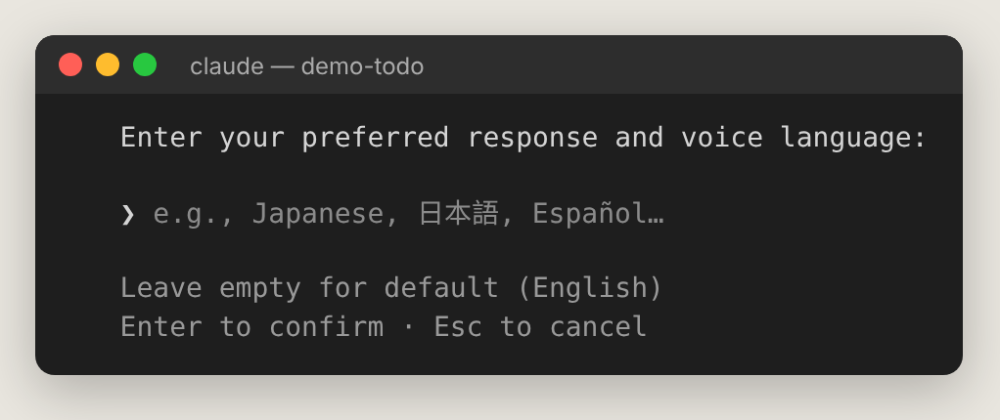
權限與工作方式
| 面板選項 | 預設 | 說明 | 設定檔寫法 |
|---|---|---|---|
| Default permission mode | Manual（互動模式實際預設為 Auto） | 新 session 起始權限模式。按 Enter 循環切換。 | "permissions": { "defaultMode": "acceptEdits" } |
| Use auto mode during plan | true | Plan 模式中，讓分類器自動核准唯讀類 shell 指令；關掉改為每次問。 | "useAutoModeDuringPlan": false |
| Worktree base ref | fresh | 新 worktree 從哪裡分出：fresh（遠端預設分支最新版）或 head（你目前的本地 HEAD）。 | "worktree": { "baseRef": "head" } |
| Respect .gitignore in file picker | true | @ 檔案選單是否隱藏 .gitignore 裡的檔案。 |
"respectGitignore": false |
| Editor mode | normal | 輸入框按鍵：normal 或 vim。 | "editorMode": "vim" |
| Question auto-continue timeout | never | Claude 問你選擇題時，閒置多久自動以已選答案繼續：60s、5m、10m、never。 | "askUserQuestionTimeout": "5m" |
| Dialog expiry | default（5 分鐘） | 轉到手機等遠端裝置的確認框，多久沒回就取消。 | "dialogExpiry": "10m" |
| Messages from your other sessions | default | 其他 session 傳來的訊息：accept（直接收）、hold（暫存待審）、refuse（拒收）。 | "crossSessionInbound": "hold" |
| Model | Default (recommended) | 預設模型（同 /model）。 |
"model": "sonnet" |
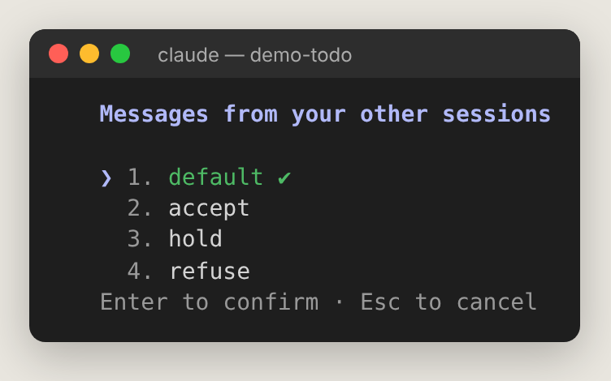
複製、捲動與 Agent view
| 面板選項 | 預設 | 說明 | 設定檔寫法（~/.claude.json 或 settings） |
|---|---|---|---|
| Skip the /copy picker | false | /copy 直接複製整段回覆，不跳出區塊選擇器。 |
"copyFullResponse": true |
| Copy on select | true | 滑鼠選取文字即自動複製（全螢幕模式）。 | "copyOnSelect": false |
| Auto-scroll | true | 全螢幕模式自動捲到最新輸出。 | "autoScrollEnabled": false |
| Open agents view by default | false | 只打 claude 時直接開 Agent view。 |
"defaultToAgentsView": true |
| ← opens agents | true | 空白輸入按 ← 開 Agent view。常誤觸就關掉。 | "leftArrowOpensAgents": false |
| Show last response in external editor | false | 按 Ctrl+G 開編輯器時，附上 Claude 上一則回覆（註解形式）方便引用。 | "externalEditorContext": true |
更新、通知與整合
| 面板選項 | 預設 | 說明 | 設定檔寫法 |
|---|---|---|---|
| Auto-update channel | latest | latest（新功能最快）或 stable（約晚一週，跳過有問題的版本）。 | "autoUpdatesChannel": "stable" |
| Local notifications | Auto | 任務完成或需要你時的通知方式：終端機鈴聲、iTerm2、Kitty、Ghostty 通知或關閉。 | "preferredNotifChannel": "terminal_bell" |
| Auto-connect to IDE (external terminal) | false | 在外部終端機啟動時，自動連到正在執行的 VS Code／JetBrains。 | "autoConnectIde": true |
| Claude in Chrome enabled by default | false | 每個 session 都啟用 Chrome 瀏覽器整合。 | "claudeInChromeDefaultEnabled": true |
| Use custom API key | （有設 API key 時才出現） | 是否使用環境變數中的 ANTHROPIC_API_KEY。 |
— |
| Project instructions | claude-md-or-agents-md | 要讀 CLAUDE.md、AGENTS.md 或兩者（第 11 章）。 | 見下方 |
切到 stable 頻道時，會問你要「允許降版」還是「停在目前版本直到 stable 追上」：
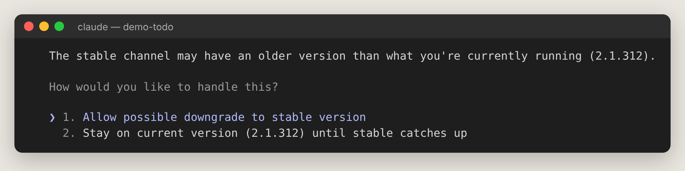
Project instructions：
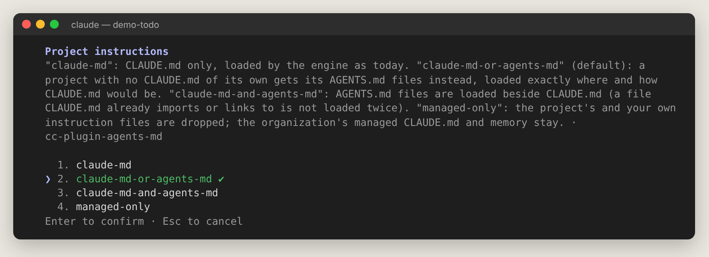
| 值 | 讀哪些檔 |
|---|---|
| claude-md | 只讀 CLAUDE.md |
| claude-md-or-agents-md（預設） | 有 CLAUDE.md 就讀它，沒有才讀 AGENTS.md |
| claude-md-and-agents-md | 兩者都讀 |
| managed-only | 只讀公司統一下發的指示 |
設定檔寫法：
{
"pluginConfigs": {
"cc-plugin-agents-md@builtin": { "options": { "instructionFiles": "claude-md-and-agents-md" } }
}
}
7.4 其他設定對話框
/model：選模型
- 上下鍵選模型，←/→ 調 effort。
- Enter 設為預設（之後新 session 也用它）；s 只用於本次 session。
- 每個模型旁直接標示價格（每百萬 token 輸入／輸出）。
/effort：推理強度
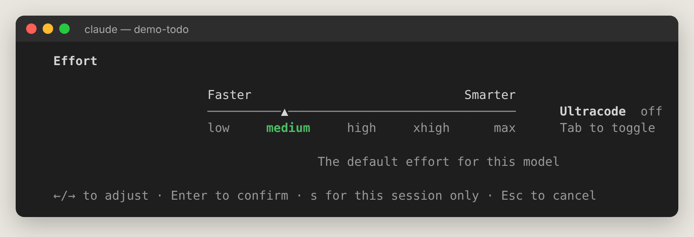
- 左右鍵在 low、medium、high、xhigh、max 之間調整；Tab 切換 Ultracode。
- s 只用於本次 session。
/permissions：權限規則
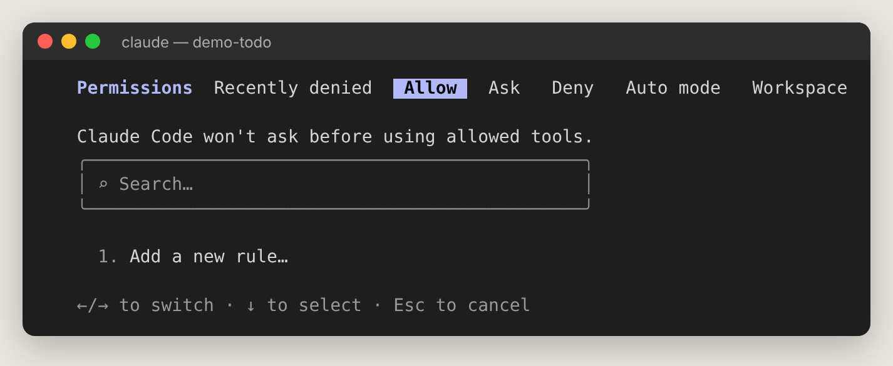
分頁：Recently denied（Auto mode 最近擋下的動作，可重試）、Allow、Ask、Deny、Auto mode（分類器規則）、Workspace（工作目錄）。選「Add a new rule…」新增規則（第 9 章）。
/memory：記憶
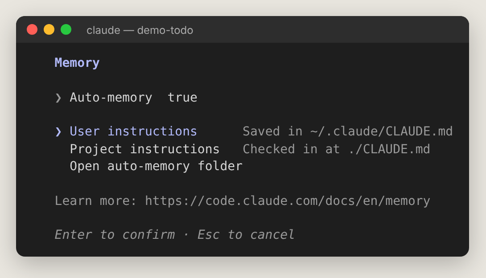
開關 Auto-memory、編輯個人 ~/.claude/CLAUDE.md 或專案 ./CLAUDE.md、打開自動記憶資料夾。
/hooks、/skills、/plugin、/sandbox
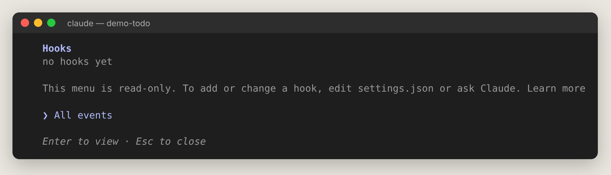
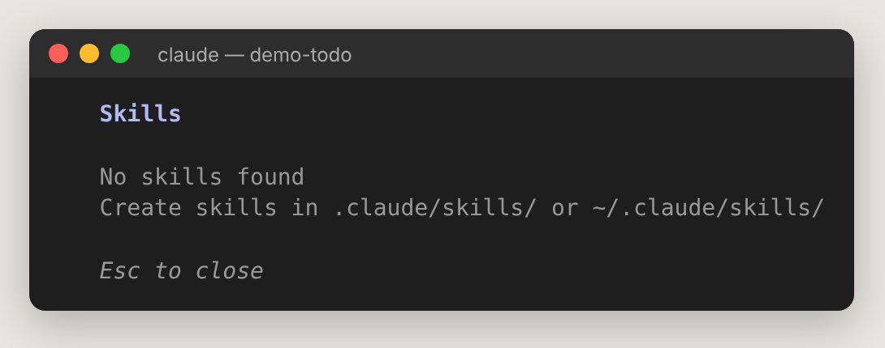
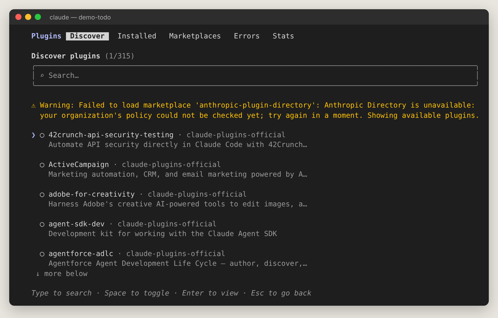
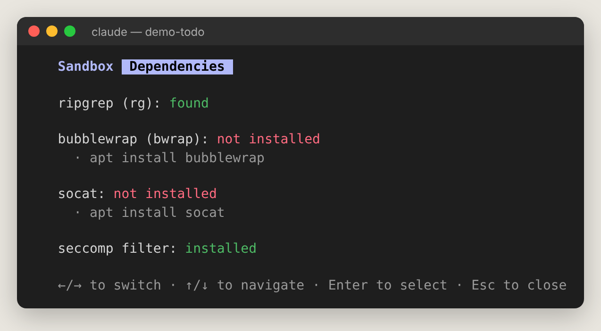
這些分別在第 12、9 章詳細介紹。
7.5 我該先改哪些設定？（新手建議）
| 需求 | 建議設定 |
|---|---|
| 想要中文回覆 | Language → 繁體中文 |
| 想要邊做邊學 | Output style → Explanatory |
| 嫌 Claude 囉嗦 | Output style → Concise |
| 怕 Claude 亂改 | Default permission mode → Manual |
| 想穩定不想踩新版 bug | Auto-update channel → stable |
| 眼睛容易累 | Theme → Light／Reduce motion → true |
第 8 章 settings.json：所有設定項目逐一說明
/config面板只列出常用選項。所有設定都能寫在settings.json檔案裡。本章先教你設定檔的觀念，再把 v2.1.312 的全部設定 key（共 245 項）逐一說明並附範例。
8.1 設定檔在哪裡？
| 範圍 | 檔案位置 | 影響誰 | 適合放 |
|---|---|---|---|
| 使用者 | ~/.claude/settings.json（Windows：C:\Users\你\.claude\settings.json） |
你在這台電腦的所有專案 | 個人偏好：主題、語言、預設模型 |
| 專案（共享） | 專案內 .claude/settings.json |
所有用這個專案的人（commit 進 git） | 團隊共用的權限、hooks、plugins |
| 專案（本機） | 專案內 .claude/settings.local.json |
只有你、只在這個專案（自動排除在 git 外） | 個人例外設定；權限提示選「不再詢問」時寫在這裡 |
| 組織管理 | IT 部署的 managed-settings.json、MDM 或後台下發 |
公司所有人 | 資安政策 |
| 全域 | ~/.claude.json |
你 | Claude Code 自己維護（帳號、MCP、少數介面選項），一般不用手改 |
剛安裝時這些檔案都不存在，第一次在 /config 改設定或回答「不再詢問」時才會自動建立。也可以自己用編輯器建立。
8.2 優先順序：誰說了算？
同一個設定寫在多個檔案時，上面的蓋過下面的：
① 組織管理（最高，無法被覆蓋）
② 命令列 --settings（只影響這次）
③ 專案本機 .claude/settings.local.json
④ 專案共享 .claude/settings.json
⑤ 使用者 ~/.claude/settings.json（最低）
例外：清單類設定（例如 permissions.allow）會合併而不是覆蓋。
🔍 設定沒生效？在 session 中輸入
/status，看「Setting sources」列出實際載入了哪些檔案；在終端機執行claude doctor可列出寫錯而被忽略的設定。
8.3 設定檔的寫法
設定檔是嚴格的 JSON：用大括號包起來、key 用雙引號、項目之間用逗號，最後一項後面不能有逗號，也不能寫註解。
{
"$schema": "https://json.schemastore.org/claude-code-settings.json",
"language": "繁體中文",
"model": "opus",
"outputStyle": "Explanatory",
"permissions": {
"allow": ["Bash(npm run test *)", "Bash(git diff *)"],
"deny": ["Read(./.env)"]
}
}
- 第一行
$schema讓 VS Code 等編輯器提供自動完成與錯誤提示，強烈建議加上。 - 本章表格中的「範例」是一個片段，貼進大括號內即可；有多個項目時記得用逗號分隔。
- 存檔後大部分設定會立即生效（Claude Code 會監看設定檔）；
model與 effort 要在 session 中用/model、/effort才會即時切換。 - 懶得手改？在 session 中輸入
/update-config 你想要的設定，Claude 會幫你改對的檔案。
8.4 只想試一次？
claude --settings '{"model": "sonnet", "outputStyle": "Concise"}'
只影響這次啟動，不寫入任何檔案。
8.5 「範圍」欄位說明
下方表格的「範圍」表示這個 key 能寫在哪裡才有效：
| 標示 | 意思 |
|---|---|
| 任何設定檔 | 使用者、專案、本機、組織都可以 |
| 使用者／組織 | 只在 ~/.claude/settings.json、--settings 或組織設定有效（寫在專案檔會被忽略，避免別人 commit 進來的設定影響你） |
| 使用者／本機／組織 | 同上，另外也接受 .claude/settings.local.json |
| 僅組織管理 | 只有 IT 部署的管理設定有效，一般使用者寫了也沒用 |
| ~/.claude.json | 全域設定檔中的選項（通常透過 /config 修改） |
標有「格式示意」的範例，表示該設定是較複雜的物件，範例展示用途與大致結構；正式使用前請對照官方 All settings 文件確認完整欄位。
8.6 全部設定項目
快速跳轉：🧠 模型與推理｜🛡️ 權限｜📦 沙盒（Sandbox）｜📚 Context、壓縮與紀錄｜📝 記憶、指示與 Git｜🧩 Hooks、Skills 與 Plugins｜🔌 MCP 外部工具｜🚀 平行代理、工作流程與 Worktree｜🎨 介面與操作體驗｜🔔 通知、遠端與桌面整合｜🔑 環境、驗證與更新｜🏢 組織管理專用｜🗄️ 已棄用（看到舊教學時參考）
🧠 模型與推理
決定 Claude 用哪個模型、想得多深、回覆什麼語言。
| 設定 key | 範圍 | 說明 | 範例 |
|---|---|---|---|
model |
任何設定檔 | 新 session 一開始使用的模型。可填別名（opus、sonnet、haiku、fable、best、opusplan）或完整模型 ID。 | "model": "opus" |
fallbackModel |
任何設定檔 | 主要模型過載或無法使用時，依序改用的備援模型（最多三個）。 | "fallbackModel": ["sonnet", "haiku"] |
language |
任何設定檔 | Claude 回覆與語音聽寫使用的語言，原樣傳給 Claude。想要繁中回覆就設這個。 | "language": "繁體中文（台灣）" |
effortLevel |
任何設定檔 | 預設推理強度（還沒為某模型另存等級時使用）。可選 low、medium、high、xhigh。 | "effortLevel": "high" |
modelSettings |
任何設定檔 | 依模型分別記住 effort 與自動壓縮門檻；/model、/effort 選擇時會自動寫入。 | "modelSettings": { "claude-opus-5-5": { "effortLevel": "high" } } |
maxEffortLevel |
任何設定檔 | 推理強度上限，任何更高的選擇都會被壓到這裡（可全域或依模型）。適合控制成本。 | "maxEffortLevel": "high" |
alwaysThinkingEnabled |
任何設定檔 | 設為 false 關閉延伸思考（Opus/Sonnet/Haiku 5.5 與 Fable 永遠開啟，設了也無效）。 | "alwaysThinkingEnabled": false |
showThinkingSummaries |
任何設定檔 | 在對話中顯示 Claude 的思考摘要，而不是折疊起來。 | "showThinkingSummaries": true |
fastMode |
任何設定檔 | 開啟 Fast mode（Opus 速度約 2.5 倍、單價較高，需 usage credits）。 | "fastMode": true |
fastModePerSessionOptIn |
任何設定檔 | 每個新 session 都從 Fast mode 關閉開始，需要時再 /fast 開啟，避免意外花費。 | "fastModePerSessionOptIn": true |
advisorModel |
任何設定檔 | 啟用「顧問工具」：關鍵時刻請另一個模型給建議，這裡填顧問模型。 | "advisorModel": "opus" |
ultracode |
任何設定檔 | 讓 Claude 對每個實質任務都規劃多代理「動態工作流程」。很耗 token。 | "ultracode": true |
switchModelsOnFlag |
任何設定檔 | 訊息被安全機制標記時：true 自動換模型繼續；false 暫停 session 讓你決定。 | "switchModelsOnFlag": false |
availableModels |
任何設定檔 | 限制可選的模型清單（常由公司設定）。未設定代表全部可選。 | "availableModels": ["sonnet", "haiku"] |
availableModelsMatch |
僅組織管理 | availableModels 的比對方式：prefix（預設，涵蓋衍生版本）或 exact。 | "availableModelsMatch": "exact" |
deniedModels |
僅組織管理 | 封鎖特定模型，即使 availableModels 允許也不能選。 | "deniedModels": ["claude-opus-5-5"] |
enforceAvailableModels |
任何設定檔 | 讓「Default」選項也必須落在 availableModels 之內。 | "enforceAvailableModels": true |
modelPicker |
使用者／組織 | 自訂 /model 選單要列出哪些模型列、標籤與說明。 | "modelPicker": { "options": [ { "model": "sonnet", "label": "日常用" } ] } |
modelOverrides |
任何設定檔 | 把 Anthropic 模型 ID 對應到雲端供應商的 ID（例如 Bedrock ARN）。 | "modelOverrides": { "claude-opus-5-5": "arn:aws:bedrock:us-east-1:123456789012:inference-profile/example" } |
modelPricing |
僅組織管理 | 以公司合約價回報花費（給管理員）。 | "modelPricing": { "claude-opus-5-5": { "input": 3.2, "output": 16 } }格式示意 |
🛡️ 權限
決定 Claude 哪些動作可以直接做、哪些要先問你、哪些永遠禁止。
| 設定 key | 範圍 | 說明 | 範例 |
|---|---|---|---|
permissions |
任何設定檔 | 權限設定的總容器，包含下面各子項。 | "permissions": { "allow": [], "ask": [], "deny": [] } |
permissions.allow |
任何設定檔 | 不用問就允許的工具使用規則。 | "permissions": { "allow": ["Bash(npm run test *)", "Bash(git diff *)"] } |
permissions.ask |
任何設定檔 | 每次都要先問你的規則（即使其他地方允許）。 | "permissions": { "ask": ["Bash(git push *)"] } |
permissions.deny |
任何設定檔 | 永遠禁止的規則，任何模式都有效，例如禁止讀取秘密檔案。 | "permissions": { "deny": ["Read(./.env)", "Read(./secrets/**)"] } |
permissions.defaultMode |
任何設定檔 | 新 session 的起始權限模式：default(Manual)、acceptEdits、plan、auto、dontAsk、bypassPermissions。auto 與 bypass 不能從專案檔設定。 | "permissions": { "defaultMode": "acceptEdits" } |
permissions.additionalDirectories |
任何設定檔 | 讓 Claude 也能存取目前資料夾以外的目錄。 | "permissions": { "additionalDirectories": ["../shared-lib"] } |
permissions.blockReadsOutsideWorkingDirectories |
任何設定檔 | 在所有模式中都禁止讀取工作目錄以外的檔案。 | "permissions": { "blockReadsOutsideWorkingDirectories": true } |
permissions.disableBypassPermissionsMode |
任何設定檔 | 禁止進入 bypassPermissions（完全不問）模式。 | "permissions": { "disableBypassPermissionsMode": "disable" } |
disableAutoMode |
任何設定檔 | 把 Auto mode 從 Shift+Tab 循環中移除。 | "disableAutoMode": "disable" |
autoMode |
使用者／組織 | 為 Auto mode 分類器加入你自己的允許／封鎖規則與環境描述（可用 /auto-mode-setup 產生）。 | "autoMode": { "environment": ["$defaults", "staging.example.com 是測試機，可以部署"] } |
autoMode.classifyAllShell |
使用者／組織 | 所有 shell 指令都交給分類器審查（包含原本白名單內的）。 | "autoMode": { "classifyAllShell": true } |
useAutoModeDuringPlan |
使用者／本機／組織 | Plan 模式下的 shell 指令也讓分類器自動審查；false 則改為詢問你。 | "useAutoModeDuringPlan": false |
skipAutoPermissionPrompt |
使用者／組織 | 跳過第一次啟用 Auto mode 時的說明提示。 | "skipAutoPermissionPrompt": true |
skipDangerousModePermissionPrompt |
使用者／本機／組織 | 跳過進入 bypassPermissions 時的確認對話框（不建議）。 | "skipDangerousModePermissionPrompt": true |
allowManagedPermissionRulesOnly |
僅組織管理 | 只採用組織管理設定中的權限規則，忽略個人與專案規則。 | "allowManagedPermissionRulesOnly": true |
📦 沙盒（Sandbox）
用作業系統層級限制 Claude 執行的 shell 指令能碰到的檔案與網路。
| 設定 key | 範圍 | 說明 | 範例 |
|---|---|---|---|
sandbox |
任何設定檔 | 沙盒設定的總容器（macOS、Linux、WSL2）。 | "sandbox": { "enabled": true } |
sandbox.enabled |
任何設定檔 | 開啟 Bash 沙盒。也可在 session 中用 /sandbox 切換。 | "sandbox": { "enabled": true } |
sandbox.autoAllowBashIfSandboxed |
任何設定檔 | 在沙盒中執行的指令自動核准、不跳提示。 | "sandbox": { "autoAllowBashIfSandboxed": true } |
sandbox.allowUnsandboxedCommands |
任何設定檔 | 被沙盒擋下時，是否允許 Claude 改在沙盒外重試（仍需你核准）。 | "sandbox": { "allowUnsandboxedCommands": false } |
sandbox.excludedCommands |
任何設定檔 | 這些指令一律在沙盒外執行（走一般權限流程）。 | "sandbox": { "excludedCommands": ["docker compose *"] } |
sandbox.failIfUnavailable |
任何設定檔 | 沙盒無法啟動時直接拒絕開始，而不是不受保護地執行。 | "sandbox": { "failIfUnavailable": true } |
sandbox.filesystem |
任何設定檔 | 檔案系統規則的容器。 | "sandbox": { "filesystem": { "allowWrite": ["/tmp/build"] } } |
sandbox.filesystem.allowWrite |
任何設定檔 | 額外允許寫入的路徑。 | "sandbox": { "filesystem": { "allowWrite": ["~/.kube", "/tmp/build"] } } |
sandbox.filesystem.denyWrite |
任何設定檔 | 禁止寫入的路徑。 | "sandbox": { "filesystem": { "denyWrite": ["./config/prod"] } } |
sandbox.filesystem.denyRead |
任何設定檔 | 禁止讀取的路徑（預設沙盒可讀大部分檔案，包括 ~/.ssh）。 | "sandbox": { "filesystem": { "denyRead": ["~/.ssh", "~/.aws"] } } |
sandbox.filesystem.allowRead |
任何設定檔 | 在 denyRead 範圍內重新開放可讀的子路徑。 | "sandbox": { "filesystem": { "denyRead": ["~/"], "allowRead": ["."] } } |
sandbox.filesystem.disabled |
使用者／組織 | 關閉檔案隔離、只保留網路隔離。 | "sandbox": { "filesystem": { "disabled": true } } |
sandbox.filesystem.allowManagedReadPathsOnly |
僅組織管理 | 禁止開發者自行重新開放被組織封鎖的讀取路徑。 | "sandbox": { "filesystem": { "allowManagedReadPathsOnly": true } } |
sandbox.network |
任何設定檔 | 網路規則的容器。 | "sandbox": { "network": { "allowedDomains": ["github.com"] } } |
sandbox.network.allowedDomains |
任何設定檔 | 預先允許、不用詢問就能連線的網域（支援 *.）。 | "sandbox": { "network": { "allowedDomains": ["github.com", "*.npmjs.org"] } } |
sandbox.network.deniedDomains |
任何設定檔 | 封鎖的網域（即使符合允許的萬用字元也擋）。 | "sandbox": { "network": { "deniedDomains": ["evil.example.com"] } } |
sandbox.network.strictAllowlist |
使用者／組織 | 不在允許清單的網域直接拒絕，而不是詢問你。 | "sandbox": { "network": { "strictAllowlist": true } } |
sandbox.network.allowLocalBinding |
任何設定檔 | 允許沙盒內指令在 macOS 上監聽本機埠（例如啟動 dev server）。 | "sandbox": { "network": { "allowLocalBinding": true } } |
sandbox.network.allowUnixSockets |
任何設定檔 | macOS 上允許連線的 Unix socket 路徑。 | "sandbox": { "network": { "allowUnixSockets": ["/var/run/docker.sock"] } } |
sandbox.network.allowAllUnixSockets |
任何設定檔 | 允許連線所有 Unix socket。 | "sandbox": { "network": { "allowAllUnixSockets": true } } |
sandbox.network.allowMachLookup |
任何設定檔 | 允許 macOS 工具連到 XPC 服務。 | "sandbox": { "network": { "allowMachLookup": ["com.apple.coresimulator.*"] } }格式示意 |
sandbox.network.httpProxyPort |
任何設定檔 | 改用你自己的 HTTP proxy。 | "sandbox": { "network": { "httpProxyPort": 8080 } } |
sandbox.network.socksProxyPort |
任何設定檔 | 改用你自己的 SOCKS proxy。 | "sandbox": { "network": { "socksProxyPort": 1080 } } |
sandbox.network.tlsTerminate |
使用者／組織 | 讓沙盒 proxy 解開 TLS 以檢查 HTTPS 請求內容。 | "sandbox": { "network": { "tlsTerminate": true } } |
sandbox.network.allowManagedDomainsOnly |
僅組織管理 | 網路允許清單只能由組織設定。 | "sandbox": { "network": { "allowManagedDomainsOnly": true } } |
sandbox.credentials |
任何設定檔 | 在沙盒中隱藏或遮罩憑證（環境變數、檔案）。 | "sandbox": { "credentials": { "envVars": { "GITHUB_TOKEN": "mask" } } }格式示意 |
sandbox.credentials.envVars |
任何設定檔 | 沙盒中要移除或遮罩的環境變數。 | "sandbox": { "credentials": { "envVars": { "AWS_SECRET_ACCESS_KEY": "unset" } } }格式示意 |
sandbox.credentials.files |
任何設定檔 | 封鎖或遮罩憑證檔的讀取。 | "sandbox": { "credentials": { "files": { "~/.npmrc": "block" } } }格式示意 |
sandbox.credentials.allowPlaintextInject |
使用者／組織 | 在信任的測試網路上，允許遮罩的憑證送到純 HTTP。 | "sandbox": { "credentials": { "allowPlaintextInject": true } } |
sandbox.credentials.awsPairs |
使用者／組織 | 把 AWS 金鑰變數配對，讓 proxy 能重新簽章。 | "sandbox": { "credentials": { "awsPairs": [["AWS_ACCESS_KEY_ID", "AWS_SECRET_ACCESS_KEY"]] } }格式示意 |
sandbox.credentials.sigv4 |
使用者／組織 | 遇到串流、預簽章或 SigV4A 請求時是失敗或放行。 | "sandbox": { "credentials": { "sigv4": "fail" } }格式示意 |
sandbox.allowAppleEvents |
使用者／組織 | 允許沙盒指令在 macOS 送出 Apple Events（控制其他 App）。 | "sandbox": { "allowAppleEvents": true } |
sandbox.enableWeakerNestedSandbox |
任何設定檔 | 在無特權容器內執行較弱的 Linux 沙盒。 | "sandbox": { "enableWeakerNestedSandbox": true } |
sandbox.enableWeakerNetworkIsolation |
任何設定檔 | macOS 上讓 gh、gcloud、terraform 在 MITM proxy 後仍能驗證 TLS。 | "sandbox": { "enableWeakerNetworkIsolation": true } |
sandbox.allowNestedUserNamespaces |
任何設定檔 | 允許沙盒內建立 user namespace（Chromium、rootless podman 需要）；可能削弱檔案保護。 | "sandbox": { "allowNestedUserNamespaces": true } |
sandbox.ignoreViolations |
任何設定檔 | 對預期中的探測不顯示違規報告。 | "sandbox": { "ignoreViolations": { "*": ["/usr/local/share"] } }格式示意 |
sandbox.ripgrep |
使用者／組織 | 在沙盒中使用你自己的 ripgrep 執行檔。 | "sandbox": { "ripgrep": "/opt/bin/rg" }格式示意 |
sandbox.bwrapPath |
僅組織管理 | bubblewrap 不在 PATH 時指定路徑。 | "sandbox": { "bwrapPath": "/opt/bin/bwrap" } |
sandbox.socatPath |
僅組織管理 | socat 不在 PATH 時指定路徑。 | "sandbox": { "socatPath": "/opt/bin/socat" } |
📚 Context、壓縮與紀錄
控制對話記憶空間怎麼用、何時摘要、保存多久。
| 設定 key | 範圍 | 說明 | 範例 |
|---|---|---|---|
autoCompactEnabled |
任何設定檔 | context 快滿時自動摘要壓縮對話（建議保持開啟）。 | "autoCompactEnabled": true |
autoCompactWindow |
任何設定檔 | context 用到多少 token 時觸發自動壓縮（10 萬～100 萬）。 | "autoCompactWindow": 500000 |
idleCompaction |
任何設定檔 | 設為 false 時，閒置的長對話不會在快取過期前先壓縮。 | "idleCompaction": false |
promptCacheTtl |
任何設定檔 | 主對話的提示快取保存時間：5m 或 1h（訂閱預設 1h）。 | "promptCacheTtl": "1h" |
subagentPromptCacheTtl |
任何設定檔 | subagent 與工作流程代理的快取保存時間。 | "subagentPromptCacheTtl": "1h" |
bashOutputMaxChars |
任何設定檔 | 指令成功輸出時，直接給 Claude 看的最大字元數（預設 30000），超過的存成檔案。 | "bashOutputMaxChars": 60000 |
skillListingBudgetFraction |
任何設定檔 | 保留多少比例的 context 放 skills 清單（預設 0.01 = 1%）。 | "skillListingBudgetFraction": 0.02 |
skillListingMaxDescChars |
任何設定檔 | 每個 skill 描述在清單中的最大字元數（預設 1536）。 | "skillListingMaxDescChars": 800 |
fileCheckpointingEnabled |
任何設定檔 | 編輯前先快照檔案，讓 /rewind 能還原程式碼。 | "fileCheckpointingEnabled": true |
bashEditDiffEnabled |
使用者／組織 | 記錄 Bash 指令改動了哪些檔案並顯示差異。 | "bashEditDiffEnabled": false |
cleanupPeriodDays |
任何設定檔 | 對話紀錄保存天數（預設 30，最少 1）。 | "cleanupPeriodDays": 90 |
desktopSessionCleanupPeriodDays |
使用者／組織 | 桌面版產生的對話紀錄保存上限天數（0 = 不限）。 | "desktopSessionCleanupPeriodDays": 60 |
plansDirectory |
任何設定檔 | Plan 模式寫出計畫檔的位置（相對專案根目錄，預設 ~/.claude/plans/）。 | "plansDirectory": "docs/plans" |
📝 記憶、指示與 Git
控制 Claude 會讀到哪些指示、自動記住什麼、commit 怎麼署名。
| 設定 key | 範圍 | 說明 | 範例 |
|---|---|---|---|
autoMemoryEnabled |
任何設定檔 | 開關自動記憶（Claude 自己記下你的偏好與專案脈絡）。 | "autoMemoryEnabled": false |
autoMemoryDirectory |
任何設定檔 | 自動記憶的存放資料夾（需絕對路徑或 ~/ 開頭）。 | "autoMemoryDirectory": "~/my-claude-memory" |
claudeMdExcludes |
任何設定檔 | 不要載入的 CLAUDE.md（路徑或萬用字元），適合大型 monorepo。 | "claudeMdExcludes": ["**/legacy/**/CLAUDE.md"] |
claudeMd |
僅組織管理 | 組織統一注入的 CLAUDE.md 內容。 | "claudeMd": "所有程式碼註解使用英文。" |
includeGitInstructions |
任何設定檔 | 是否在系統提示中包含內建的 commit／PR 流程指示。 | "includeGitInstructions": false |
attribution |
任何設定檔 | 自訂 commit 與 PR 的署名文字（設為空字串可隱藏）。 | "attribution": { "commit": "", "pr": "" } |
attribution.commit |
任何設定檔 | commit 結尾的署名（trailer）。 | "attribution": { "commit": "Assisted-by: Claude" } |
attribution.pr |
任何設定檔 | PR 描述中的署名文字。 | "attribution": { "pr": "🤖 由 Claude Code 協助產生" } |
attribution.sessionUrl |
任何設定檔 | 雲端／遠端 session 的 commit 不附 session 連結。 | "attribution": { "sessionUrl": false } |
outputStyle |
任何設定檔 | 回覆風格：Default、Proactive、Concise、Explanatory、Learning 或自訂（大小寫要對）。 | "outputStyle": "Explanatory" |
agent |
任何設定檔 | 每個 session 都以某個 subagent 身分當主代理啟動。 | "agent": "code-reviewer" |
🧩 Hooks、Skills 與 Plugins
擴充功能的開關與管控。
| 設定 key | 範圍 | 說明 | 範例 |
|---|---|---|---|
hooks |
任何設定檔 | 在生命週期事件（工具前後、送出提示、結束…）自動執行指令。 | "hooks": { "PostToolUse": [ { "matcher": "Edit|Write", "hooks": [ { "type": "command", "command": "npx prettier --write ." } ] } ] } |
disableAllHooks |
任何設定檔 | 停用所有 hooks、狀態列指令與 @ 檔案建議指令（含使用者安裝的 mods）。 | "disableAllHooks": true |
allowManagedHooksOnly |
僅組織管理 | 只執行組織部署的 hooks。 | "allowManagedHooksOnly": true |
allowedHttpHookUrls |
任何設定檔 | HTTP hooks 只能送到這些網址（支援 *）。 | "allowedHttpHookUrls": ["https://hooks.example.com/*"] |
httpHookAllowedEnvVars |
任何設定檔 | HTTP hooks 可放進 header 的環境變數白名單。 | "httpHookAllowedEnvVars": ["HOOK_TOKEN"] |
statusLine |
任何設定檔 | 在提示框下方顯示自訂狀態列（執行你的指令，stdin 收到 session JSON）。 | "statusLine": { "type": "command", "command": "~/.claude/statusline.sh" } |
subagentStatusLine |
任何設定檔 | 自訂 subagent 面板每一列的顯示。 | "subagentStatusLine": { "type": "command", "command": "~/.claude/agent-row.sh" }格式示意 |
fileSuggestion |
任何設定檔 | 用你自己的指令提供 @ 檔案自動完成清單。 | "fileSuggestion": { "type": "command", "command": "~/.claude/list-files.sh" } |
respectGitignore |
任何設定檔 | @ 檔案選單是否排除 .gitignore 中的檔案（預設 true）。 | "respectGitignore": false |
disableSkillShellExecution |
任何設定檔 | 禁止 skills／自訂指令中的 !指令 內嵌執行。 |
"disableSkillShellExecution": true |
disableBundledSkills |
任何設定檔 | 停用內建 skills 與 workflows（/code-review、/batch…）。 | "disableBundledSkills": true |
skillOverrides |
任何設定檔 | 不改 SKILL.md 就隱藏或縮減某個 skill：on、name-only、user-invocable-only、off。 | "skillOverrides": { "dataviz": "off" } |
syncClaudeAiSkills |
使用者／本機／組織 | 設 false 停止載入你在 claude.ai 開啟的 skills。 | "syncClaudeAiSkills": false |
syncClaudeAiPlugins |
使用者／本機／組織 | 設 false 停止載入你在 claude.ai 開啟的 plugins。 | "syncClaudeAiPlugins": false |
enabledPlugins |
任何設定檔 | 依範圍開關個別 plugin（格式：名稱@市集）。 | "enabledPlugins": { "code-review@claude-plugins-official": true } |
extraKnownMarketplaces |
任何設定檔 | 為此 repo 或組織註冊額外的 plugin 市集。 | "extraKnownMarketplaces": { "acme": { "source": { "source": "github", "repo": "acme/claude-plugins" } } }格式示意 |
pluginConfigs |
使用者／組織 | plugin 設定對話框的已存答案（也用來設定內建 AGENTS.md 讀取方式）。 | "pluginConfigs": { "cc-plugin-agents-md@builtin": { "options": { "instructionFiles": "claude-md-and-agents-md" } } } |
prependPlugins |
使用者／組織 | 組織的 mods 在每個使用者安裝的 mod 之前執行。 | "prependPlugins": ["guard@acme"]格式示意 |
appendPlugins |
使用者／組織 | 組織的 mods 在每個使用者安裝的 mod 之後執行。 | "appendPlugins": ["audit@acme"]格式示意 |
strictKnownMarketplaces |
僅組織管理 | 只允許這些市集來源。 | "strictKnownMarketplaces": [ { "source": "github", "repo": "acme/claude-plugins" } ]格式示意 |
blockedMarketplaces |
僅組織管理 | 封鎖特定市集來源。 | "blockedMarketplaces": [ { "source": "github", "repo": "someone/untrusted" } ]格式示意 |
disableCommandPluginSources |
僅組織管理 | 封鎖「執行指令來安裝」的 plugin 來源。 | "disableCommandPluginSources": true |
pluginSuggestionMarketplaces |
僅組織管理 | 哪些市集的 plugin 可以出現在情境推薦中。 | "pluginSuggestionMarketplaces": ["acme"] |
pluginTrustMessage |
僅組織管理 | 在 plugin 信任警告中附加公司自訂說明。 | "pluginTrustMessage": "請只安裝 IT 審核過的 plugin。" |
strictPluginOnlyCustomization |
僅組織管理 | skills、agents、hooks、MCP 只能來自 plugin 與組織，擋掉個人／專案來源。 | "strictPluginOnlyCustomization": true |
strictPluginOnlyCustomization.agents |
僅組織管理 | 只鎖 subagents。 | "strictPluginOnlyCustomization": { "agents": true } |
strictPluginOnlyCustomization.hooks |
僅組織管理 | 只鎖 hooks。 | "strictPluginOnlyCustomization": { "hooks": true } |
strictPluginOnlyCustomization.mcp |
僅組織管理 | 只鎖 MCP 伺服器。 | "strictPluginOnlyCustomization": { "mcp": true } |
strictPluginOnlyCustomization.skills |
僅組織管理 | 只鎖 skills。 | "strictPluginOnlyCustomization": { "skills": true } |
disableSideloadFlags |
僅組織管理 | 拒絕 --plugin-dir、--agents、--mcp-config 等側載旗標。 | "disableSideloadFlags": true |
🔌 MCP 外部工具
管理 Claude 能連到哪些外部工具伺服器。
| 設定 key | 範圍 | 說明 | 範例 |
|---|---|---|---|
enableAllProjectMcpServers |
任何設定檔 | 自動核准專案 .mcp.json 中所有伺服器，不再逐一詢問。 | "enableAllProjectMcpServers": true |
enabledMcpjsonServers |
任何設定檔 | 核准專案 .mcp.json 中指定的伺服器。 | "enabledMcpjsonServers": ["github", "sentry"] |
disabledMcpjsonServers |
任何設定檔 | 拒絕專案 .mcp.json 中指定的伺服器。 | "disabledMcpjsonServers": ["experimental-db"] |
allowedMcpServers |
任何設定檔 | 允許使用者加入的 MCP 伺服器白名單。 | "allowedMcpServers": [ { "serverName": "github" } ]格式示意 |
deniedMcpServers |
任何設定檔 | 依名稱、網址或指令封鎖 MCP 伺服器（優先於白名單）。 | "deniedMcpServers": [ { "serverName": "filesystem" } ]格式示意 |
allowManagedMcpServersOnly |
僅組織管理 | 白名單只採用組織設定。 | "allowManagedMcpServersOnly": true |
managedMcpServers |
僅組織管理 | 組織提供給每位使用者的遠端 MCP 伺服器。 | "managedMcpServers": { "jira": { "type": "http", "url": "https://mcp.acme.com/jira" } }格式示意 |
allowAllClaudeAiMcps |
僅組織管理 | 在 managed-mcp.json 鎖定下仍載入 claude.ai connectors。 | "allowAllClaudeAiMcps": true |
disableClaudeAiConnectors |
任何設定檔 | 停用 claude.ai 上連好的 connectors。 | "disableClaudeAiConnectors": true |
allowClaudeInChromeWithManagedMcp |
僅組織管理 | 在 managed-mcp.json 鎖定下仍允許 Claude in Chrome。 | "allowClaudeInChromeWithManagedMcp": true |
channelsEnabled |
僅組織管理 | 允許組織使用 channels（MCP 推送事件進 session）。 | "channelsEnabled": true |
allowedChannelPlugins |
僅組織管理 | 取代預設的 channel plugin 白名單。 | "allowedChannelPlugins": ["ci-notifier@acme"]格式示意 |
🚀 平行代理、工作流程與 Worktree
多個 Claude 同時工作時的行為。
| 設定 key | 範圍 | 說明 | 範例 |
|---|---|---|---|
disableAgentView |
任何設定檔 | 關閉背景代理與 Agent view（claude agents、--bg、/background）。 | "disableAgentView": true |
defaultToAgentsView |
~/.claude.json | 只打 claude 不帶參數時，直接開啟 Agent view。 | "defaultToAgentsView": true |
leftArrowOpensAgents |
~/.claude.json | 關閉「空白輸入按 ← 開啟 Agent view」的快捷鍵。 | "leftArrowOpensAgents": false |
crossSessionInbound |
任何設定檔 | 其他 session 傳來的訊息：accept 直接送達、hold 暫存待你審核、refuse 拒收。 | "crossSessionInbound": "hold" |
isolatePeerMachines |
任何設定檔 | 要傳訊息給其他電腦上的 session 前先問你。 | "isolatePeerMachines": true |
teammateMode |
任何設定檔 | Agent team 隊友的顯示方式：auto、tmux、iterm2、in-process。 | "teammateMode": "tmux" |
enableWorkflows |
任何設定檔 | 為自己開關動態工作流程（Pro 方案需開啟）。 | "enableWorkflows": true |
disableWorkflows |
任何設定檔 | 對所有人關閉動態工作流程。 | "disableWorkflows": true |
workflowKeywordTriggerEnabled |
任何設定檔 | 設 false 讓提示中的 ultracode 字樣不再觸發工作流程。 | "workflowKeywordTriggerEnabled": false |
workflowSizeGuideline |
任何設定檔 | 工作流程代理數建議：small(<5)、medium(<10)、large(<50)、unrestricted。 | "workflowSizeGuideline": "small" |
worktree |
任何設定檔 | git worktree 的建立方式（容器）。 | "worktree": { "baseRef": "head" } |
worktree.baseRef |
任何設定檔 | 新 worktree 從遠端預設分支（fresh）或本地 HEAD（head）分出。 | "worktree": { "baseRef": "head" } |
worktree.bgIsolation |
任何設定檔 | 設 none 讓背景 session 直接改工作目錄，不建 worktree。 | "worktree": { "bgIsolation": "none" } |
worktree.sparsePaths |
任何設定檔 | 每個 worktree 只 checkout 需要的目錄（大型 repo 加速）。 | "worktree": { "sparsePaths": ["packages/web", "packages/shared"] } |
worktree.symlinkDirectories |
任何設定檔 | 把大型目錄用 symlink 共用到每個 worktree，省空間。 | "worktree": { "symlinkDirectories": ["node_modules", ".cache"] } |
processWrapper |
使用者／組織 | （macOS/Linux）背景程序透過公司指定的啟動器執行。 | "processWrapper": "/usr/local/bin/corp-launch" |
🎨 介面與操作體驗
外觀、輸入方式、顯示內容。
| 設定 key | 範圍 | 說明 | 範例 |
|---|---|---|---|
theme |
任何設定檔 | 介面配色：dark、light、auto、色盲友善、ANSI 等。 | "theme": "dark" |
tui |
任何設定檔 | 終端機渲染器：default（傳統）或 fullscreen（無閃爍全螢幕）。 | "tui": "fullscreen" |
viewMode |
任何設定檔 | 啟動時的對話檢視：default、verbose（完整工具輸出）、focus（只看重點）。 | "viewMode": "focus" |
verbose |
任何設定檔 | 顯示完整工具輸出（viewMode 同時設定時以 viewMode 為準）。 | "verbose": true |
editorMode |
任何設定檔 | 輸入框按鍵模式：normal 或 vim。 | "editorMode": "vim" |
vimInsertModeRemaps |
使用者／組織 | Vim 插入模式中把兩個按鍵序列對應成 Esc。 | "vimInsertModeRemaps": { "jj": "<Esc>" } |
defaultShell |
任何設定檔 | 輸入框 ! 指令使用 bash 或 powershell。 | "defaultShell": "powershell" |
respondToBashCommands |
任何設定檔 | 設 false 時，! 指令的輸出只加入對話、Claude 不自動回應。 | "respondToBashCommands": false |
promptSuggestionEnabled |
任何設定檔 | 設 false 隱藏灰色的「下一句建議」。 | "promptSuggestionEnabled": false |
emojiCompletionEnabled |
任何設定檔 | 設 false 關閉 :shortcode: emoji 建議。 | "emojiCompletionEnabled": false |
spellcheck |
使用者／組織 | 用已安裝的拼字檢查器在輸入框標示拼錯的字。 | "spellcheck": { "enabled": true }格式示意 |
spinnerTipsEnabled |
任何設定檔 | 工作中 spinner 下方是否顯示小提示。 | "spinnerTipsEnabled": false |
spinnerTipsOverride |
任何設定檔 | 加入或取代 spinner 提示文字。 | "spinnerTipsOverride": { "excludeDefault": true, "tips": ["記得先跑測試再 commit"] } |
spinnerVerbs |
任何設定檔 | 加入或取代工作中顯示的動詞（例如 Thinking、Baking）。 | "spinnerVerbs": { "mode": "append", "verbs": ["思考中", "敲鍵盤中"] } |
showTurnDuration |
任何設定檔 | 回合結束後顯示「Cooked for 1m 20s」耗時。 | "showTurnDuration": false |
terminalProgressBarEnabled |
任何設定檔 | 在支援的終端機分頁顯示進度條。 | "terminalProgressBarEnabled": false |
terminalTitleFromRename |
任何設定檔 | 設 false 讓 /rename 不改終端機分頁標題。 | "terminalTitleFromRename": false |
timeFormat |
任何設定檔 | 時間顯示：auto、12-hour、24-hour、24-hour-utc 或 strftime 樣式。 | "timeFormat": "24-hour" |
timeZone |
任何設定檔 | 介面顯示時間用的時區（IANA 名稱）。 | "timeZone": "Asia/Taipei" |
prefersReducedMotion |
任何設定檔 | 減少或關閉動畫（無障礙）。 | "prefersReducedMotion": true |
syntaxHighlightingDisabled |
任何設定檔 | 關閉 diff 與程式碼區塊的語法上色。 | "syntaxHighlightingDisabled": true |
maxProseWidth |
任何設定檔 | 寬終端機中，說明文字最多幾欄寬（表格與程式碼不受限）。 | "maxProseWidth": 100 |
autoScrollEnabled |
任何設定檔 | 全螢幕模式下自動捲到最新輸出。 | "autoScrollEnabled": false |
wheelScrollAccelerationEnabled |
任何設定檔 | 全螢幕模式下滑鼠滾輪加速。 | "wheelScrollAccelerationEnabled": false |
awaySummaryEnabled |
任何設定檔 | 離開一陣子回來時是否顯示「期間發生了什麼」摘要。 | "awaySummaryEnabled": false |
showClearContextOnPlanAccept |
任何設定檔 | 核准計畫時多出「清空 context 再執行」選項。 | "showClearContextOnPlanAccept": true |
axScreenReader |
任何設定檔 | 螢幕閱讀器友善輸出（無邊框、無動畫的線性文字）。 | "axScreenReader": true |
voice |
任何設定檔 | 語音聽寫：開啟並選擇 hold（按住說話）或 tap（點一下開始/結束）。 | "voice": { "enabled": true, "mode": "tap" } |
voiceEnabled |
任何設定檔 | 舊版單一開關的語音聽寫設定。 | "voiceEnabled": true |
copyFullResponse |
~/.claude.json | /copy 直接複製整段回覆，不跳選擇器。 | "copyFullResponse": true |
copyOnSelect |
~/.claude.json | 設 false 關閉「滑鼠選取即複製」。 | "copyOnSelect": false |
externalEditorContext |
~/.claude.json | Ctrl+G 開外部編輯器時，附上上一則回覆（以註解形式）。 | "externalEditorContext": true |
diffTool |
~/.claude.json | 檔案差異在哪裡顯示：auto（有連 IDE 時用 IDE）或 terminal（一律終端機）。 | "diffTool": "terminal" |
prStatusFooterEnabled |
~/.claude.json | 設 false 隱藏底部的 PR 審查狀態徽章。 | "prStatusFooterEnabled": false |
prUrlTemplate |
任何設定檔 | PR 連結改指向內部審查工具（可用 {owner}{repo}{number} 等變數）。 | "prUrlTemplate": "https://reviews.example.com/{owner}/{repo}/pull/{number}" |
footerLinksRegexes |
使用者／組織 | 輸出符合正規表示式時，在輸入框下方顯示可點的連結徽章（例如 issue 編號）。 | "footerLinksRegexes": [ { "regex": "JIRA-(\\d+)", "url": "https://jira.example.com/browse/JIRA-$1" } ]格式示意 |
companyAnnouncements |
任何設定檔 | 啟動時顯示公司公告（多則時隨機一則）。 | "companyAnnouncements": ["本週五 18:00 停機維護"] |
feedbackSurveyRate |
任何設定檔 | 品質問卷出現機率（0～1）。 | "feedbackSurveyRate": 0 |
feedbackDrafts |
使用者／組織 | Claude 代擬回饋報告的通知方式：notify、quiet、off。 | "feedbackDrafts": "off" |
🔔 通知、遠端與桌面整合
通知、手機、遠端控制、IDE 與瀏覽器整合。
| 設定 key | 範圍 | 說明 | 範例 |
|---|---|---|---|
preferredNotifChannel |
任何設定檔 | 任務完成時的通知方式：auto、terminal_bell、iterm2、kitty、ghostty、notifications_disabled 等。 | "preferredNotifChannel": "terminal_bell" |
agentPushNotifEnabled |
任何設定檔 | 允許 Claude 主動推播通知到手機。 | "agentPushNotifEnabled": true |
inputNeededNotifEnabled |
任何設定檔 | Claude 在等你（權限或問題）時推播到手機。 | "inputNeededNotifEnabled": true |
askUserQuestionTimeout |
使用者／組織 | Claude 問你問題時，閒置多久自動用已選答案繼續：60s、5m、10m、never。 | "askUserQuestionTimeout": "5m" |
dialogExpiry |
使用者／組織 | 轉發到遠端裝置的對話框等多久沒回應就取消：60s、5m、10m、never。 | "dialogExpiry": "10m" |
autoContinueAtUsageLimit |
使用者／組織 | 碰到 claude.ai 額度上限時，等重置後自動繼續任務。 | "autoContinueAtUsageLimit": true |
remoteControlAtStartup |
任何設定檔 | 每個 session 啟動就自動開啟 Remote Control。 | "remoteControlAtStartup": true |
disableRemoteControl |
任何設定檔 | 全面停用 Remote Control。 | "disableRemoteControl": true |
remote.defaultEnvironmentId |
任何設定檔 | claude --cloud 預設使用的雲端環境。 | "remote": { "defaultEnvironmentId": "env_abc123" } |
enableArtifact |
任何設定檔 | 設 false 關閉 Artifact（可分享網頁成品）工具。 | "enableArtifact": false |
disableDeepLinkRegistration |
任何設定檔 | 不註冊 claude-cli:// 連結處理程式。 | "disableDeepLinkRegistration": true |
claudeInChromeDefaultEnabled |
~/.claude.json | 每個 session 預設啟用 Chrome 整合。 | "claudeInChromeDefaultEnabled": true |
autoConnectIde |
~/.claude.json | 在外部終端機啟動時自動連到執行中的 VS Code / JetBrains。 | "autoConnectIde": true |
autoInstallIdeExtension |
~/.claude.json | 設 false 停止從 VS Code 終端機自動安裝擴充。 | "autoInstallIdeExtension": false |
sshConfigs |
使用者／組織 | 在桌面版環境下拉選單中加入 SSH 連線。 | "sshConfigs": [ { "id": "dev", "name": "開發機", "sshHost": "me@dev.example.com" } ]格式示意 |
sshHostAllowlist |
僅組織管理 | 限制桌面版 SSH session 可連的主機。 | "sshHostAllowlist": ["*.corp.example.com"]格式示意 |
disableDesktopLocalSessions |
僅組織管理 | 關閉桌面版的本機 Code session。 | "disableDesktopLocalSessions": true |
disableMobileSimulatorTools |
僅組織管理 | 禁止 Claude 操作 iOS 模擬器面板。 | "disableMobileSimulatorTools": true |
browserExternalPageTools |
僅組織管理 | 桌面內建瀏覽器中，不讓 Claude 的工具作用在外部網頁。 | "browserExternalPageTools": false |
disableBrowserExternalNavigation |
僅組織管理 | 桌面內建瀏覽器只能開 localhost。 | "disableBrowserExternalNavigation": true |
🔑 環境、驗證與更新
環境變數、登入方式、憑證腳本、版本控管。
| 設定 key | 範圍 | 說明 | 範例 |
|---|---|---|---|
env |
任何設定檔 | 每個 session 與子程序都會帶上的環境變數。 | "env": { "CLAUDE_CODE_SUBAGENT_MODEL": "sonnet", "NODE_ENV": "development" } |
apiKeyHelper |
任何設定檔 | 執行腳本動態產生 API 憑證（例如從密碼管理器取）。 | "apiKeyHelper": "~/.claude/get-key.sh" |
awsAuthRefresh |
任何設定檔 | Bedrock 憑證過期時執行的刷新指令。 | "awsAuthRefresh": "aws sso login --profile dev" |
awsCredentialExport |
任何設定檔 | 以 JSON 輸出 Bedrock 憑證的指令。 | "awsCredentialExport": "~/.claude/aws-creds.sh" |
gcpAuthRefresh |
任何設定檔 | 刷新 Google Cloud 憑證的指令。 | "gcpAuthRefresh": "gcloud auth application-default login" |
otelHeadersHelper |
任何設定檔 | 產生輪替 OpenTelemetry header 的指令。 | "otelHeadersHelper": "~/.claude/otel-headers.sh" |
forceLoginMethod |
任何設定檔 | 限制登入方式：claudeai、console、gateway。 | "forceLoginMethod": "claudeai" |
forceLoginOrgUUID |
任何設定檔 | 只允許登入指定組織的帳號。 | "forceLoginOrgUUID": "123e4567-e89b-12d3-a456-426614174000" |
forceLoginGatewayUrl |
僅組織管理 | 登入畫面要連的公司閘道網址。 | "forceLoginGatewayUrl": "https://claude-gw.acme.com" |
gatewayInternalNetworks |
僅組織管理 | 讓 /login 能連到位於公司內網公有 IP 段的閘道。 | "gatewayInternalNetworks": ["203.0.113.0/24"] |
allowedProviders |
僅組織管理 | 限制這台機器可用的 API 供應商。 | "allowedProviders": ["anthropic", "bedrock"] |
skipWebFetchPreflight |
任何設定檔 | 連不到 Anthropic 時跳過 WebFetch 的網域預檢。 | "skipWebFetchPreflight": true |
autoUpdatesChannel |
任何設定檔 | 自動更新頻道：latest（最新）或 stable（約晚一週、較穩）。 | "autoUpdatesChannel": "stable" |
minimumVersion |
任何設定檔 | 自動更新不會裝到比這更舊的版本。 | "minimumVersion": "2.1.300" |
requiredMinimumVersion |
僅組織管理 | 低於此版本就拒絕啟動。 | "requiredMinimumVersion": "2.1.300" |
requiredMaximumVersion |
僅組織管理 | 高於此版本就拒絕啟動。 | "requiredMaximumVersion": "2.1.312" |
🏢 組織管理專用
給 IT／管理員部署政策用，一般使用者不需要設定。
| 設定 key | 範圍 | 說明 | 範例 |
|---|---|---|---|
managedSourcesBehavior |
僅組織管理 | 多個管理來源時：first-wins（只用最高優先的）或 merge（合併）。 | "managedSourcesBehavior": "merge" |
parentSettingsBehavior |
僅組織管理 | SDK 或 IDE 宿主傳入的限制要合併還是捨棄。 | "parentSettingsBehavior": "merge" |
policyHelper |
僅組織管理 | 啟動時執行程式來計算管理設定。 | "policyHelper": { "path": "/usr/local/bin/claude-policy", "timeoutMs": 5000 }格式示意 |
policyHelper.path |
僅組織管理 | policy helper 執行檔路徑。 | "policyHelper": { "path": "/usr/local/bin/claude-policy" } |
policyHelper.refreshIntervalMs |
僅組織管理 | 背景重新執行 helper 的間隔（毫秒）。 | "policyHelper": { "refreshIntervalMs": 3600000 } |
policyHelper.timeoutMs |
僅組織管理 | 等待 helper 的上限（毫秒）。 | "policyHelper": { "timeoutMs": 5000 } |
forceRemoteSettingsRefresh |
僅組織管理 | 啟動前必須成功取得伺服器下發的設定，否則不啟動。 | "forceRemoteSettingsRefresh": true |
wslInheritsWindowsSettings |
僅組織管理 | 讓 WSL 讀取 Windows 端的管理政策。 | "wslInheritsWindowsSettings": true |
🗄️ 已棄用（看到舊教學時參考）
這些 key 已不建議或不再有效。
| 設定 key | 範圍 | 說明 | 範例 |
|---|---|---|---|
includeCoAuthoredBy |
任何設定檔 | 已棄用，改用 attribution。 | "attribution": { "commit": "" } |
disableArtifact |
任何設定檔 | 已棄用，改用 enableArtifact: false。 | "enableArtifact": false |
keybindingFlavor |
任何設定檔 | 已無作用（文字編輯鍵一律 readline 風格）。 | （不需設定） |
permissionExplainerEnabled |
~/.claude.json | v2.1.257 移除。 | （不需設定） |
taskOutputMaxChars |
任何設定檔 | v2.1.277 移除。 | （不需設定） |
teammateDefaultModel |
~/.claude.json | v2.1.234 移除。 | （不需設定） |
8.7 一份完整的範例設定檔
{
"$schema": "https://json.schemastore.org/claude-code-settings.json",
"model": "opus",
"effortLevel": "high",
"language": "繁體中文",
"outputStyle": "Explanatory",
"theme": "dark",
"timeFormat": "24-hour",
"autoUpdatesChannel": "stable",
"permissions": {
"defaultMode": "acceptEdits",
"allow": ["Bash(npm run test *)", "Bash(git diff *)", "Bash(git status)"],
"ask": ["Bash(git push *)"],
"deny": ["Read(./.env)", "Read(./.env.*)"]
},
"sandbox": {
"enabled": true,
"filesystem": { "denyRead": ["~/.ssh"] },
"network": { "allowedDomains": ["github.com", "*.npmjs.org"] }
},
"statusLine": { "type": "command", "command": "~/.claude/statusline.sh" },
"env": { "CLAUDE_CODE_SUBAGENT_MODEL": "sonnet" },
"cleanupPeriodDays": 60
}
第 9 章 權限、Auto mode 與沙盒
Claude Code 能改檔、跑指令，所以「它可以做什麼、什麼要先問、什麼絕對不行」是最重要的安全設定。
9.1 六種權限模式
| 模式（設定值） | 畫面顯示 | 不用問就能做 | 什麼時候用 |
|---|---|---|---|
Manual（default／manual） |
⏸ manual mode on |
只有讀取 | 第一次用、重要專案、想逐步審核 |
Accept edits（acceptEdits） |
⏵⏵ accept edits on |
讀取、改檔、工作目錄內常見檔案指令（mkdir、mv、cp、rm…） | 信任方向，想加快但仍想審核指令 |
Plan（plan） |
⏸ plan mode on |
讀取與安全的查詢指令；核准計畫前不能改檔 | 大改動前先討論方案 |
Auto（auto） |
⏵⏵ auto mode on |
全部，但每個動作先經分類器審查 | 互動模式的預設；日常使用 |
Don't ask（dontAsk） |
⏵⏵ don't ask on |
只有讀取與事先核准的工具，其他直接拒絕 | 自動化腳本、CI |
Bypass（bypassPermissions） |
⏵⏵ bypass permissions on |
幾乎全部，完全不問 | 只在隔離的容器／虛擬機中使用 |
切換方式：
- 互動中按 Shift+Tab（桌面版用模式選擇器或 Ctrl/Cmd+Shift+M）。
- 啟動時指定：
claude --permission-mode plan。 - 設為預設：
"permissions": { "defaultMode": "acceptEdits" }（auto與bypassPermissions不能寫在專案設定檔，避免別人替你開大門）。
🔒 兩條永遠成立的規則：① deny（禁止）規則在任何模式都有效，包括 bypass。② 寫入
.git、.claude、.bashrc等受保護路徑，除 bypass 外都不會自動核准。
9.2 權限詢問框怎麼回答
修改檔案時：
執行指令時：
| 選項 | 效果 |
|---|---|
| Yes | 只允許這次 |
Yes, and don't ask again for: npm test * |
記住規則（寫入 .claude/settings.local.json），以後同類指令不再問 |
| Yes, and switch to accept edits／auto mode | 本 session 切換到較寬鬆的模式 |
| No | 拒絕；接著告訴 Claude 你希望怎麼做 |
| Tab | 回答的同時附上補充說明（例：「可以，但只改這個函式」） |
9.3 Auto mode 深入了解
Auto mode 用一個獨立的安全分類器模型，在每個動作執行前審查。它只看你的要求與 Claude 打算做的動作，看不到檔案或網頁內容，因此惡意網頁中的「指令」騙不了它。
| 預設會擋下 | 預設允許 |
|---|---|
curl … | bash 下載後執行 |
工作目錄內的檔案操作 |
| 把敏感資料送到外部 | 依 lock 檔安裝相依套件 |
| 正式環境部署、資料庫 migration | 讀 .env 並送給對應的 API |
git push --force、git reset --hard |
唯讀的網路請求 |
terraform destroy 之類的破壞操作 |
推送到目前 repo 的一般分支 |
| 合併未核准的 PR、提交秘密資訊 |
- 連續被擋 3 次或累計 20 次，會暫停 Auto mode 改回詢問。
- 被擋的動作會出現在
/permissions的 Recently denied，可以手動重試。 - 你在對話中說「不要 push」，分類器也會當成限制。
- 用
/auto-mode-setup讓它認識你的環境（例如哪台是測試機）。 claude auto-mode defaults可看內建規則。
⚠️ Auto mode 能大幅減少打擾，但不保證 100% 安全。敏感操作請搭配 deny 規則、hooks、沙盒。
9.4 自訂規則：allow／ask／deny
用 /permissions 管理，或寫進設定檔：
{
"permissions": {
"allow": [
"Bash(npm run lint)",
"Bash(npm run test *)",
"Bash(git status)",
"Bash(git diff *)",
"WebFetch(domain:github.com)"
],
"ask": ["Bash(git push *)"],
"deny": [
"Read(./.env)",
"Read(./.env.*)",
"Read(./secrets/**)",
"Bash(rm -rf *)"
]
}
}
| 規則寫法 | 意思 | 範例 |
|---|---|---|
Bash(指令) |
完全符合的指令 | Bash(npm run build) |
Bash(開頭 *) |
以此開頭的指令 | Bash(git log *) |
Read(路徑)／Edit(路徑) |
讀取／修改檔案，支援 ** |
Edit(src/**) |
WebFetch(domain:網域) |
可抓取的網站 | WebFetch(domain:docs.python.org) |
mcp__伺服器 或 mcp__伺服器__工具 |
MCP 工具 | mcp__github__create_issue |
Agent(名稱) |
某個子代理 | Agent(Explore) |
工具(參數:值) |
依參數比對 | Agent(model:opus) |
路徑寫法：./ 相對專案、~/ 家目錄、// 絕對路徑。判斷順序：deny 優先於 ask，ask 優先於 allow。
💡 懶得自己寫？
/fewer-permission-prompts會分析你最近的紀錄，自動建議白名單。
9.5 沙盒（Sandbox）
沙盒由作業系統強制限制 Claude 執行的指令能碰到哪些檔案與網路。macOS 用 Seatbelt，Linux 與 WSL2 用 bubblewrap；原生 Windows 不支援。
開啟：輸入 /sandbox，或設定 "sandbox": { "enabled": true }。/sandbox 會先檢查相依套件：
（Linux 需要 bubblewrap 與 socat，畫面會告訴你怎麼裝。）
| 面向 | 預設 | 調整用的設定 |
|---|---|---|
| 寫入 | 只能寫工作目錄與暫存資料夾 | filesystem.allowWrite／denyWrite |
| 讀取 | 大部分可讀（包括 ~/.ssh，建議封鎖） | filesystem.denyRead／allowRead |
| 網路 | 經本機 proxy，允許清單預設是空的 | network.allowedDomains／deniedDomains |
{
"sandbox": {
"enabled": true,
"filesystem": { "denyRead": ["~/.ssh", "~/.aws"] },
"network": { "allowedDomains": ["github.com", "*.npmjs.org", "pypi.org"] },
"excludedCommands": ["docker compose *"]
}
}
沙盒內執行的指令會自動核准（不再一直問），因為作業系統已經擋住了危險範圍。注意沙盒只管 shell 指令，Claude 的讀寫檔工具、MCP、hooks 不在沙盒內。
9.6 推薦的安全組合
| 使用情境 | 建議 |
|---|---|
| 新手、重要專案 | Manual 或 Auto + deny 秘密檔案 |
| 日常開發 | Auto + 常用指令 allow + deny .env |
| 想幾乎零打擾 | 沙盒（auto-allow）+ 精確 allow 規則 |
| CI／腳本 | dontAsk + --allowedTools 白名單 |
| 完全放手 | 只在 Docker／VM 中用 --dangerously-skip-permissions |
第 10 章 模型、推理強度、Fast mode 與 Context 管理
10.1 選哪個模型？
| 選項 | 模型（2026/10） | 特色 | 價格（每百萬 token 輸入／輸出） |
|---|---|---|---|
| Default（推薦） | 目前為 Opus 5.5 | 帳號預設 | — |
| Opus | Opus 5.5 | 日常與複雜任務的最佳平衡 | $4／$20 |
| Fable | Fable 5.1 | 最強，適合最難、最長的任務（需有權限） | $10／$50 |
| Sonnet | Sonnet 5.5 | 例行任務、快、便宜 | $2／$10 |
| Haiku | Haiku 5.5 | 最快最便宜，適合簡單問答 | $0.10／$0.50（超過 10 萬 token 的提示較貴） |
訂閱方案使用者不是按 token 付費，而是消耗方案額度；越強的模型消耗越快。
切換方式（優先順序由高到低）：
- session 中
/model sonnet（選單中按 s 只用於本次） - 啟動時
claude --model sonnet - 環境變數
ANTHROPIC_MODEL=sonnet - 設定檔
"model": "sonnet"
特殊別名：opusplan 在 Plan 模式用 Opus 想、執行時用 Sonnet 做，省額度；best 有 Fable 就用 Fable，否則用 Opus。
10.2 推理強度（Effort）
| 等級 | 適合 |
|---|---|
| low | 改錯字、格式化、簡單問題（最快、最省） |
| medium | 一般開發（Opus／Sonnet／Haiku 5.5 的預設） |
| high | 較難的除錯、跨多檔修改 |
| xhigh | 架構設計、困難演算法 |
| max | 最難的問題（只對本次 session 有效） |
/effort high 直接設定
/effort 打開滑桿
/effort auto 回到模型預設
claude --effort xhigh 啟動時指定
ultrathink：在提示中任何地方寫 ultrathink，只有這一回合會用 xhigh 深入思考，不改變整體設定。例如：「ultrathink 為什麼這個 race condition 只在正式環境出現？」
ultracode：不是強度等級，而是讓 Claude 對大任務自動派出多個子代理（動態工作流程）。單次使用就在提示中寫 ultracode:；整個 session 開啟用 /effort ultracode。很耗額度，見第 13 章。
⚠️ 從舊模型換到 Opus 5.5 時，預設會從 medium 起跳。若你習慣 high，請在 5.5 上執行一次
/effort high（會記住）。
10.3 Fast mode
- 同一個 Opus 模型，速度最高約 2.5 倍，品質不變，單價較高（Opus 5.5 為 $8／$40）。
- 開關：
/fast或 Alt+O（Mac：Option+O）；開啟時輸入框旁出現↯。 - 訂閱方案使用 Fast mode 會從 usage credits（額外儲值） 扣款，不含在月費額度裡；需要先開啟 usage credits。Team／Enterprise 需管理員開放。
- 小技巧：在對話一開始就開，中途開會用高價重算整段 context 一次。
10.4 Context 管理
上圖解讀：
| 項目 | 意思 |
|---|---|
32.7k/1m tokens (3%) |
已用 3.27 萬，上限 100 萬 |
| System prompt／System tools | Claude Code 本身的說明與工具定義（固定成本） |
| Skills | 可用 skills 的清單 |
| Messages | 你們的對話 |
| Free space | 剩餘空間 |
| Autocompact buffer | 預留給自動壓縮的空間 |
保持 context 健康的習慣：
- 一個任務一個對話：換題目就
/clear。 - 主動壓縮：
/compact 只保留資料庫結構的決定。 - 把吵雜工作交給子代理：大量搜尋、log 分析讓 subagent 做，只回傳摘要。
- 精簡 CLAUDE.md：長流程改寫成 skill（需要時才載入）。
- 關掉用不到的 MCP：每個 MCP 工具定義都佔空間。
相關設定：/autocompact 500k（自動壓縮門檻）、"idleCompaction": false（關閉閒置壓縮）、CLAUDE_CODE_DISABLE_1M_CONTEXT=1（強制 20 萬視窗）。
10.5 省額度的實用技巧
- 例行工作用 medium 甚至 low；需要時才
ultrathink。 - 子代理用 Sonnet：設定
"env": { "CLAUDE_CODE_SUBAGENT_MODEL": "sonnet" }。 - 經常
/usage看哪個 skill、MCP 最耗。 - 切換模型、effort、output style 會讓快取失效，下一次請求較貴，避免頻繁切換。
- 很久沒動的大對話，重新開始可能比
/resume更省。
第 11 章 記憶：CLAUDE.md、Rules、AGENTS.md 與自動記憶
每個新 session，Claude 都像第一天上班的同事。「記憶」功能讓它每次都知道你的專案規矩和你的習慣。
11.1 兩種記憶
| CLAUDE.md | 自動記憶（Auto memory） | |
|---|---|---|
| 誰寫 | 你 | Claude 自己 |
| 內容 | 指示與規則 | 學到的偏好、你糾正過的事、專案脈絡 |
| 範圍 | 專案、個人或組織 | 每個 repo 一份 |
| 載入 | 每個 session 自動讀 | 每個 session 自動讀（前 200 行或 25KB） |
記憶是「提醒」不是「強制」。要保證某事絕不發生，請用 deny 規則或 hook。
11.2 CLAUDE.md 放哪裡
| 類型 | 位置 | 誰看得到 | 放什麼 |
|---|---|---|---|
| 個人 | ~/.claude/CLAUDE.md |
只有你，所有專案 | 「回覆用繁體中文」「我習慣用 pnpm」 |
| 專案 | ./CLAUDE.md 或 ./.claude/CLAUDE.md |
團隊（commit 進 git） | 架構、指令、規範 |
| 專案本機 | ./CLAUDE.local.md |
只有你（加入 .gitignore） | 你的測試帳號、本機網址 |
| 組織 | IT 部署 | 全公司 | 公司規範 |
從工作目錄往上每一層的 CLAUDE.md 都會載入並合併（越靠近工作目錄的越後讀）；子資料夾的 CLAUDE.md 在 Claude 碰到那個資料夾的檔案時才載入。
11.3 怎麼寫一份好的 CLAUDE.md
先 /init 產生初稿，再修改。範例：
# 專案：Acme 網站
## 常用指令
- 安裝：pnpm install
- 開發：pnpm dev（http://localhost:3000）
- 測試：pnpm test；單一檔案：pnpm test -- path/to/file
- 提交前必須通過：pnpm typecheck && pnpm lint
## 程式規範
- TypeScript strict，禁止使用 any
- API 路由一律用 withAuth() 包起來
- 新元件放 src/components/，並附 *.test.tsx
## 不要做的事
- 不要修改 src/generated/（自動產生）
- 資料庫 migration 要另開 PR
@docs/architecture.md
原則：具體、簡短、可驗證。「程式要寫好」沒用；「函式超過 50 行要拆分」有用。用 /doctor prompt-audit 檢查寫得好不好。
匯入其他檔案：寫 @路徑 即可，例如 @docs/architecture.md、@~/.claude/my-rules.md。
11.4 .claude/rules/：依檔案類型套用的規則
---
paths:
- "src/components/**/*.tsx"
---
- 元件一律用 function component 與 hooks
- props 型別命名為 XxxProps
有 paths 的規則只在 Claude 碰到符合的檔案時載入，比全部塞進 CLAUDE.md 更省 context。個人通用規則放 ~/.claude/rules/。
11.5 AGENTS.md（與其他 AI 工具共用）
很多 AI 編碼工具使用 AGENTS.md。Claude Code 的規則：
| 你的專案有 | Claude 讀 |
|---|---|
| 只有 AGENTS.md | AGENTS.md |
| AGENTS.md 和 CLAUDE.md | 只讀 CLAUDE.md |
CLAUDE.md 裡寫了 @AGENTS.md |
兩者（不重複） |
可在 /config → Project instructions 改成兩者都讀：
💡 最穩的做法：共用內容寫在 AGENTS.md，CLAUDE.md 第一行寫
@AGENTS.md，下面再補 Claude 專屬的說明。
11.6 自動記憶
Claude 會在工作中自己記下四類筆記：
| 類型 | 例子 |
|---|---|
| user（關於你） | 「使用者是後端工程師，熟 Go，不熟前端」 |
| feedback（你的糾正） | 「使用者要求測試用 vitest 不要用 jest」 |
| project（專案脈絡） | 「v2 API 預計 11 月上線，舊端點暫不刪除」 |
| reference（資訊在哪） | 「bug 追蹤在 Linear 的 WEB 專案」 |
- 存在
~/.claude/projects/<專案>/memory/，MEMORY.md是索引，都是普通 Markdown，可以直接打開修改或刪除。 - 開關：
/memory的 Auto-memory、設定"autoMemoryEnabled": false，或環境變數CLAUDE_CODE_DISABLE_AUTO_MEMORY=1。 - 想讓它記住某件事，直接說「記住：這個專案的測試要用 Docker 跑」。
11.7 大型 monorepo 小技巧
- 用
"claudeMdExcludes": ["**/other-team/**/CLAUDE.md"]跳過別組的指示。 - 各子專案放自己的 CLAUDE.md，只在進入時載入。
- 共用規則用
.claude/rules/搭配paths。
第 12 章 擴充 Claude Code：Skills、Subagents、Hooks、MCP、Plugins、Mods
先搞清楚「我想解決什麼問題」，再選對工具。
| 你的困擾 | 用這個 | 一句話 |
|---|---|---|
| 每次都要重講專案規矩 | CLAUDE.md（第 11 章） | 每次自動讀的說明書 |
| 某種任務有固定步驟，常常要貼同一段說明 | Skill | 需要時才載入的流程說明書，可用 /名稱 呼叫 |
| 想派專人處理特定工作，不要弄亂主對話 | Subagent | 有自己 context 的分身 |
| 某件事「每次都一定要發生」 | Hook | 事件觸發的自動腳本 |
| 要連 GitHub、資料庫、Notion 等外部系統 | MCP | 外部工具的連接器 |
| 想把上面這些打包分享給團隊 | Plugin | 擴充套件包 |
| 想改 Claude Code 的介面、加面板或即時指令 | Mod | 在 Claude Code 內部執行的 JS 程式 |
| 想改變回覆的語氣與格式 | Output style | 整個 session 的回覆風格 |
12.1 Skills（技能）
Skill 是一個資料夾，裡面有 SKILL.md。平時只有名稱和描述佔空間，Claude 判斷相關或你輸入 /名稱 時才載入完整內容。
放在哪裡：
| 範圍 | 路徑 |
|---|---|
| 個人（所有專案） | ~/.claude/skills/名稱/SKILL.md |
| 專案（commit 分享） | .claude/skills/名稱/SKILL.md |
| Plugin 內 | plugin/skills/名稱/SKILL.md（呼叫：/plugin名:skill名） |
範例：.claude/skills/release-notes/SKILL.md
---
name: release-notes
description: 依 git 紀錄撰寫版本說明。使用者要求寫 changelog 或 release notes 時使用。
argument-hint: [版本號]
allowed-tools: Bash(git log *), Bash(git describe *)
disable-model-invocation: true
---
## 上個版本以來的提交
!`git log $(git describe --tags --abbrev=0)..HEAD --oneline`
## 請你
為版本 $ARGUMENTS 撰寫 release notes：
1. 分成「新功能／修正／破壞性變更」
2. 每條一句話，用使用者看得懂的語言
3. 輸出 Markdown
使用：/release-notes 2.4.0。
| 常用欄位 | 作用 |
|---|---|
description |
最重要，Claude 靠它判斷何時使用 |
disable-model-invocation: true |
只能由你手動呼叫（適合部署等有副作用的流程） |
user-invocable: false |
不出現在 / 選單，只給 Claude 當背景知識 |
allowed-tools |
執行時預先核准的工具 |
argument-hint、$ARGUMENTS、$0、$1 |
參數提示與取用 |
!`指令` |
送給 Claude 前先執行並嵌入結果 |
context: fork + agent: Explore |
交給子代理在背景執行 |
model、effort |
執行時改用的模型與強度 |
paths |
只在處理符合的檔案時自動觸發 |
舊的
.claude/commands/名稱.md自訂指令仍可用，但新的建議都寫成 skill。最簡單的建立方法：做完一件事後說「把剛剛的流程做成一個 skill」。
管理：/skills（t 依大小排序、Space 切換可見）、/skill-doctor（找出吃 context 又少用的 skill）、設定 skillOverrides 隱藏特定 skill。
12.2 Subagents（子代理）
子代理在獨立的 context 工作，只把摘要交回，主對話保持乾淨。
內建子代理：
| 名稱 | 用途 |
|---|---|
| Explore | 快速唯讀搜尋程式碼 |
| Plan | Plan 模式中的研究 |
| general-purpose | 需要查也需要動手的多步驟任務 |
| claude-code-guide | 回答 Claude Code 用法問題 |
| statusline-setup | /statusline 時使用 |
自訂子代理：放在 .claude/agents/（專案）或 ~/.claude/agents/（個人）。最簡單是直接說「幫我建立一個程式碼審查的 subagent」。
---
name: code-reviewer
description: 程式碼審查專家。程式改動後主動使用。
tools: Read, Glob, Grep, Bash(git diff *)
model: sonnet
effort: high
---
你是資深審查員。檢查正確性、安全性、可讀性，
每個問題列出 檔案:行號、原因與修正建議。
| 常用欄位 | 作用 |
|---|---|
name、description |
必填；description 決定 Claude 何時派它 |
tools／disallowedTools |
可用／禁用的工具 |
model |
sonnet、opus、haiku、fable、inherit |
permissionMode、effort、maxTurns |
權限、強度、回合上限 |
skills、mcpServers、hooks |
預載的 skill、專屬 MCP 與 hooks |
memory |
讓它有自己的長期記憶（user／project／local） |
isolation: worktree |
在獨立 git worktree 中工作 |
background: true |
永遠在背景執行 |
呼叫方式：「用 code-reviewer 檢查我的改動」、@"code-reviewer (agent)"、或 claude --agent code-reviewer 讓整個 session 都用它。
背景與 Fork：
- 主對話派出的子代理預設在背景跑，你可以繼續做別的；它要權限時會在主畫面詢問。
- Fork 子代理會繼承整段對話（不用重新解釋背景），用
/subtask 任務啟動，結果回到本對話。 - 分不清楚三個指令？
/subtask＝派分身做完回報；/fork＝複製成另一個獨立背景 session；/branch＝分岔並切換過去。
12.3 Hooks（掛鉤）
Hook 讓某件事每次都一定發生，不靠 Claude 記得。例如：改完檔自動格式化、阻擋改 .env、需要你時跳通知。
常用事件：
| 事件 | 何時觸發 | 常見用途 |
|---|---|---|
PreToolUse |
工具執行前（可阻擋） | 擋危險指令、保護檔案 |
PostToolUse |
工具成功後 | 自動格式化、跑 lint |
UserPromptSubmit |
你送出訊息時 | 加入額外背景、檢查敏感字 |
Notification |
Claude 需要你時 | 桌面通知 |
Stop |
Claude 回答完 | 檢查任務是否真的完成 |
SessionStart |
session 開始（含壓縮後） | 載入環境資訊 |
PreCompact／PostCompact |
壓縮前後 | 保存重要資訊 |
SubagentStart／SubagentStop |
子代理開始／結束 | 記錄 |
FileChanged、CwdChanged |
檔案變動、切換目錄 | 自動載入 .env |
| 其他 | PermissionRequest、PermissionDenied、PostToolBatch、SessionEnd、WorktreeCreate、PreModelSwitch… |
進階用途 |
範例 1：改完檔自動跑 Prettier（.claude/settings.json）
{
"hooks": {
"PostToolUse": [
{
"matcher": "Edit|Write",
"hooks": [
{ "type": "command", "command": "jq -r '.tool_input.file_path' | xargs npx prettier --write" }
]
}
]
}
}
範例 2：禁止修改 .env——腳本 .claude/hooks/protect.sh（記得 chmod +x）：
#!/bin/bash
FILE=$(jq -r '.tool_input.file_path // empty')
if [[ "$FILE" == *".env"* ]]; then
echo "不可以修改 $FILE" >&2
exit 2 # exit 2 = 阻擋，stderr 會告訴 Claude 原因
fi
exit 0 # exit 0 = 放行
{
"hooks": {
"PreToolUse": [
{
"matcher": "Edit|Write",
"hooks": [
{ "type": "command", "command": "\"$CLAUDE_PROJECT_DIR\"/.claude/hooks/protect.sh", "onFailure": "block" }
]
}
]
}
}
"onFailure": "block"：腳本本身出錯或逾時也當作阻擋，安全用途建議加上。
範例 3：需要你時跳 Windows 通知（PowerShell）
{
"hooks": {
"Notification": [
{ "hooks": [ { "type": "command", "command": "powershell -c \"[console]::beep(800,300)\"" } ] }
]
}
}
Hook 類型：command（執行指令）、http（POST 到網址）、mcp_tool、prompt（讓模型判斷 ok/不 ok）、agent（實驗性）。
⚠️ Hook 以你的權限執行。審查別人 commit 的 hooks；全部停用用
"disableAllHooks": true。
12.4 MCP：連接外部工具
# 遠端 HTTP 伺服器（最常見）
claude mcp add --transport http notion https://mcp.notion.com/mcp
# 本機程式（-- 後面是啟動指令）
claude mcp add --transport stdio airtable --env AIRTABLE_API_KEY=你的金鑰 -- npx -y airtable-mcp-server
# 管理
claude mcp list
claude mcp remove notion
claude mcp login sentry # 完成 OAuth 登入
session 中輸入 /mcp 查看狀態、登入、啟用／停用。
範圍（--scope） |
誰能用 | 存在哪 |
|---|---|---|
| local（預設） | 只有你、這個專案 | ~/.claude.json |
| project | 團隊（commit） | 專案根目錄 .mcp.json |
| user | 你的所有專案 | ~/.claude.json |
你在 claude.ai 連好的 connectors 也能在 Claude Code 使用。MCP 工具太多會吃 context，用不到的請停用。
12.5 Plugins（擴充套件包）
Plugin 把 skills、子代理、hooks、MCP、output styles、workflows、mods 打包，透過「市集（marketplace）」分享。
/plugin 打開選單（Discover／Installed／Marketplaces）
/plugin install code-review@claude-plugins-official
claude plugin marketplace add 公司/claude-plugins 加入公司的市集
/reload-plugins 不重開就套用
團隊共用：在 .claude/settings.json 寫 extraKnownMarketplaces 與 enabledPlugins，隊友信任資料夾後自動取得。
⚠️ Plugin 可能含有會執行的程式碼，只安裝信任來源。
12.6 Mods（2026/10 新功能）
Mod 是一種用 JavaScript／TypeScript 寫、在 Claude Code 內部執行的 plugin，可以：
- 畫出面板、按鈕、提示框上方的資訊列
- 改造內建介面（例如 spinner 顯示工具次數）
- 攔截工具呼叫（例如危險指令先顯示影響範圍再讓你決定）
- 新增立即執行的
/指令
做法：直接請 Claude「做一個 mod，在提示框上方顯示 context 使用量」。內建的 /diff 面板、AGENTS.md 讀取其實就是 mods。關閉全部：--safe-mode（一次）或 "disableAllHooks": true。
⚠️ Mod 不在沙盒中，能讀寫你的檔案與秘密。只裝信任的；安裝前用
claude plugin validate 路徑看它會做什麼。
12.7 Output styles（回覆風格）
/output-style concise 或 "outputStyle": "Explanatory"。自訂風格：在 ~/.claude/output-styles/繁中導師.md 寫：
---
name: 繁中導師
description: 用繁體中文、先給圖再解釋
keep-coding-instructions: true
---
所有回覆使用繁體中文（台灣用語）。解釋架構時先畫 Mermaid 圖，再用條列說明。
12.8 狀態列（Status line）
/statusline 顯示目前模型、git 分支、context 使用百分比
Claude 會幫你寫好腳本並設定。手動設定："statusLine": { "type": "command", "command": "~/.claude/statusline.sh" }，腳本從 stdin 收到 JSON（模型、目錄、花費、context…），輸出的文字就是狀態列。
第 13 章 進階：平行工作、自動化、雲端與程式碼審查
13.1 同時跑多個 Claude
| 方式 | 誰規劃 | 規模 | 適合 |
|---|---|---|---|
子代理／/subtask |
Claude 逐回合決定 | 每次幾個 | 搜尋、審查、小支線 |
| 背景 session（Agent view） | 你 | 你照顧得來的數量 | 同時推進幾個獨立任務 |
/batch |
Claude 拆解 | 5–30 份 | 大規模遷移、重構 |
| Agent teams | 隊長代理帶隊友 | 少數長期隊友 | 需要互相討論的長任務 |
| 動態工作流程（Workflows） | Claude 寫的腳本 | 數十～上百個代理 | 全庫稽核、大量檔案轉換、交叉驗證研究 |
Agent view 與背景 session
claude agents # 打開 Agent view
claude --bg "調查那個不穩定的測試" # 直接開一個背景 session
/bg # 把目前 session 丟到背景
/fork 改用另一種做法試試 # 複製對話成新背景 session
claude attach 名稱 / claude logs 名稱 / claude stop 名稱
| Agent view 按鍵 | 功能 |
|---|---|
| 輸入任務 + Enter | 派出新 session |
| Space | 預覽並直接回覆 |
| Enter 或 → | 進入完整對話；空白輸入按 ← 返回 |
| Ctrl+T | 釘選（保持執行） |
| Ctrl+R | 重新命名 |
| Ctrl+X | 停止（2 秒內再按刪除） |
| Ctrl+F | 依名稱搜尋 |
- 背景 session 由背景服務執行，關掉終端機也會繼續；閒置約 1 小時會暫停，回覆就恢復。
- 從 Agent view 派出的 session 會自動在
.claude/worktrees/下建立自己的 git worktree，平行修改不會互相覆蓋。
Git worktree
手動建立：claude -w feature-auth；從 PR 建立：claude -w '#1234'。相關設定：worktree.baseRef、worktree.symlinkDirectories（共用 node_modules 省空間）。
動態工作流程（Workflows）與 ultracode
/deep-research Node.js 20 到 22 的權限模型改了什麼？ 內建研究工作流程
ultracode: 稽核 src/routes/ 下所有 API 的授權檢查 單次觸發
/workflows 查看進度（p 暫停、x 停止、s 存成指令）
Claude 會寫一個 JavaScript 腳本，同時指揮多個子代理，還能讓代理互相檢查結果。好用的工作流程可以存成 /指令 重複使用（存到 .claude/workflows/）。
⚠️ 工作流程非常耗額度。先用小範圍試，在
/workflows看每個代理的 token 消耗；/config→ Dynamic workflow size 可限制規模。
13.2 自動化與排程
/loop |
桌面版排程 | 雲端排程任務 | |
|---|---|---|---|
| 在哪跑 | 目前開著的 session | 你的電腦 | Anthropic 雲端 |
| 關電腦 | 停止 | 停止 | 照跑 |
| 觸發 | 固定間隔 | 排程 | 排程、API、GitHub 事件 |
| 建立 | /loop 10m 檢查 CI |
桌面 App | /schedule 或 claude.ai/code/routines |
/goal 所有測試通過且沒有型別錯誤：Claude 會持續工作直到條件成立。autoContinueAtUsageLimit：額度用完時，重置後自動繼續。
非互動模式（腳本、CI）
claude -p "列出所有 TODO" --output-format json
claude -p "跑測試並修正失敗" --permission-mode dontAsk --allowedTools "Bash(npm test)" "Read" "Edit"
claude -p "重構 utils" --max-budget-usd 5 --max-turns 30
cat error.log | claude -p "分析這個錯誤"
GitHub 整合
- session 中執行
/install-github-app：安裝 Claude GitHub App 並設定 Actions。之後在 issue／PR 留言@claude 幫忙修這個 bug。 - Code Review：PR 留言
@claude review（單次）、@claude review always（每次更新都審）、@claude review stop（停止）。 /autofix-pr：開雲端 session 盯著 PR，CI 失敗或有審查意見就自動修。
13.3 程式碼審查工具
| 工具 | 說明 |
|---|---|
/code-review |
本機找 bug；--fix 直接修；high、xhigh 更仔細；/code-review 1234 審 PR |
/code-review ultra（/ultrareview） |
雲端多代理深度審查，結果回到你的終端機 |
/security-review |
資安審查（注入、授權、資料外洩） |
/simplify |
找可重用、可簡化的地方並修改 |
/verify、/run |
實際啟動 app 驗證功能 |
13.4 雲端、手機與遠端
- 雲端 session：
claude --cloud "修登入 bug"或到 claude.ai/code；在 Anthropic 雲端跑，關電腦也繼續。/teleport把雲端 session 拉回本機。 - Remote Control：
/rc或claude --rc讓目前 session 能從手機或網頁遙控（程式仍在你電腦上跑），任務完成或需要你時會推播。 - 手機 App：
/mobile顯示下載 QR code。 - Chrome 整合：
claude --chrome讓 Claude 操作瀏覽器測試網頁。
13.5 Agent SDK
想用程式打造自己的 AI 代理？Agent SDK（TypeScript／Python）提供和 Claude Code 相同的代理迴圈、工具、權限、hooks、子代理與 MCP。文件：code.claude.com/docs/en/agent-sdk/overview。
第 14 章 命令列參數與環境變數
14.1 常用啟動方式
claude # 互動模式
claude "修好 build 錯誤" # 帶第一句話啟動
claude -p "解釋這個函式" # 非互動：印出結果就結束
cat logs.txt | claude -p "分析錯誤" # 把內容傳給 Claude
claude -c # 接續這個資料夾最近的對話
claude -r # 從清單挑舊對話
claude -r "登入功能" # 用名稱恢復
claude -n "新功能" # 為 session 命名
claude -w feature-auth # 在獨立 git worktree 中啟動
claude --bg "調查 flaky test" # 直接開背景 session
claude --cloud "修登入 bug" # 開雲端 session
claude --help 的開頭：
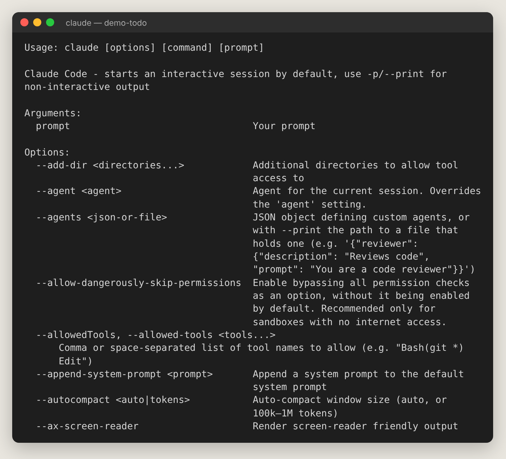
14.2 子指令
| 指令 | 用途 |
|---|---|
claude update |
更新 |
claude install stable／latest／版本號 |
安裝指定版本或頻道 |
claude doctor |
診斷安裝與設定（唯讀） |
claude auth login／logout／status |
登入管理 |
claude setup-token |
產生給 CI 用的長效 token |
claude agents |
Agent view |
claude attach／logs／stop／respawn／rm |
管理背景 session |
claude mcp add／list／get／remove／login |
MCP 管理 |
claude plugin install／validate／eval |
Plugin 管理 |
claude auto-mode defaults／config／reset |
檢視 Auto mode 規則 |
claude ultrareview 1234 |
在 CI 中跑深度審查 |
claude remote-control |
伺服器模式的遠端控制 |
claude import cursor |
從其他工具匯入設定 |
claude purge 路徑 --dry-run |
刪除某專案在這台電腦的 Claude 資料 |
14.3 常用參數
| 參數 | 說明 | 例子 |
|---|---|---|
--model |
本次模型 | --model sonnet |
--effort |
本次推理強度 | --effort high |
--permission-mode |
起始權限模式 | --permission-mode plan |
--allowedTools／--disallowedTools |
允許／禁止的工具 | --allowedTools "Bash(git *)" "Read" |
--add-dir |
額外可存取資料夾 | --add-dir ../shared |
--settings |
本次額外設定 | --settings '{"outputStyle":"Concise"}' |
--append-system-prompt |
附加系統指示 | --append-system-prompt "一律用繁體中文" |
--output-format |
-p 的輸出格式：text、json、stream-json |
-p "..." --output-format json |
--max-turns／--max-budget-usd |
限制回合數／花費（-p） |
--max-budget-usd 3 |
--mcp-config |
載入 MCP 設定檔 | --mcp-config ./mcp.json |
--plugin-dir |
本次載入開發中的 plugin | --plugin-dir ./my-plugin |
--agent |
用某個子代理當主代理 | --agent code-reviewer |
--safe-mode |
停用所有自訂，排查問題 | claude --safe-mode |
--bare |
最精簡模式，腳本啟動更快 | claude --bare -p "..." |
--debug |
除錯輸出 | --debug='mcp' |
--chrome／--ide |
連 Chrome／IDE | claude --chrome |
--remote-control（--rc） |
開放遠端控制 | claude --rc |
--dangerously-skip-permissions |
完全不問（只在隔離環境） | — |
14.4 常用環境變數
可以在終端機 export 變數=值（Windows PowerShell：$env:變數="值"），或寫進設定檔的 "env"：
{ "env": { "CLAUDE_CODE_SUBAGENT_MODEL": "sonnet" } }
| 變數 | 用途 | 例子 |
|---|---|---|
ANTHROPIC_MODEL |
本次模型（優先於設定檔） | opus |
ANTHROPIC_DEFAULT_MODEL |
新 session 預設模型 | sonnet |
ANTHROPIC_DEFAULT_OPUS_MODEL 等 |
改變 opus／sonnet／haiku／fable 別名指向 | claude-opus-5-5 |
CLAUDE_CODE_EFFORT_LEVEL |
推理強度 | high |
CLAUDE_CODE_SUBAGENT_MODEL |
子代理用的模型 | sonnet |
CLAUDE_CODE_AUTO_COMPACT_WINDOW |
自動壓縮門檻 | 500000 |
CLAUDE_CODE_DISABLE_1M_CONTEXT |
強制 20 萬 context | 1 |
MAX_THINKING_TOKENS |
設 0 關閉思考（可關閉的模型） | 0 |
CLAUDE_CODE_FORK_SUBAGENT |
設 0 關閉 fork 子代理 | 0 |
CLAUDE_CODE_DISABLE_AUTO_MEMORY |
關閉自動記憶 | 1 |
CLAUDE_CODE_DISABLE_WORKFLOWS |
關閉動態工作流程 | 1 |
CLAUDE_CODE_DISABLE_AGENT_VIEW |
關閉 Agent view | 1 |
CLAUDE_CODE_DISABLE_FAST_MODE |
關閉 Fast mode | 1 |
CLAUDE_CODE_DISABLE_FILE_MENTIONS |
@ 只給路徑、不直接塞檔案內容 |
1 |
CLAUDE_CODE_NEW_INIT |
/init 使用互動完整流程 |
1 |
CLAUDE_CONFIG_DIR |
改變 ~/.claude 的位置 |
~/work-claude |
MCP_TIMEOUT／MCP_TOOL_TIMEOUT |
MCP 啟動／工具逾時（毫秒） | 30000 |
MAX_MCP_OUTPUT_TOKENS |
MCP 輸出上限（預設 25000） | 50000 |
ANTHROPIC_API_KEY |
用 API key 驗證 | — |
ANTHROPIC_BASE_URL |
經公司閘道連線 | — |
CLAUDE_CODE_USE_BEDROCK／CLAUDE_CODE_USE_VERTEX |
使用 AWS／Google Cloud | 1 |
DISABLE_TELEMETRY |
關閉遙測 | 1 |
DISABLE_AUTOUPDATER |
關閉自動更新 | 1 |
CLAUDE_CODE_DISABLE_NONESSENTIAL_TRAFFIC |
關閉非必要網路流量 | 1 |
第 15 章 疑難排解、最佳實踐與新功能時間軸
15.1 常見問題
| 狀況 | 怎麼辦 |
|---|---|
安裝後找不到 claude |
重開終端機；仍不行參考官方 Troubleshoot installation 修正 PATH |
| 不知道哪裡壞了 | session 中 /doctor（會提議修正）；終端機 claude doctor（只診斷） |
| 懷疑是自己的設定造成 | claude --safe-mode 停用所有自訂後比較 |
| 設定沒生效 | /status 看 Setting sources；檢查 JSON 格式（不能有註解、結尾逗號）；是否被更高優先的檔案覆蓋；專案設定是否還沒信任資料夾 |
| Claude 不照 CLAUDE.md 做 | 寫得更具體簡短；/doctor prompt-audit；必須遵守的改用 hook 或 deny 規則 |
| 一直跳權限詢問 | /fewer-permission-prompts；回答時選「don't ask again」；考慮 Auto mode 或沙盒 |
| Auto mode 一直擋 | /permissions → Recently denied 手動重試；/auto-mode-setup；在對話中明確授權 |
| 回答品質變差、忘東忘西 | context 太滿：/clear 開新對話或 /compact |
| 額度用太快 | /usage 看誰最耗；降低 effort；子代理用 Sonnet；少用 workflows |
| Hook 沒觸發 | /hooks 確認；腳本 chmod +x；claude --debug 看執行紀錄 |
| MCP 連不上 | /mcp 看狀態、重新登入；claude --debug='mcp' |
| 畫面亂掉 | Ctrl+L；試 /tui fullscreen |
| 想回報 bug | /bug（可選擇附多少對話，送出前有確認） |
15.2 給新手的十條最佳實踐
- 專案一定用 git，改壞了能救回來。
- 先問再改：先讓 Claude 讀懂、解釋，再要求修改。
- 大改動先 Plan：Shift+Tab 到 Plan 模式，看過計畫再執行。
- 給驗證方法：告訴它「完成的標準」（哪個測試要過、畫面要長怎樣）。
- 方向不對立刻 Esc，不要等它做完。
- 一個任務一個對話，換題目就
/clear。 - 重複講的事寫進 CLAUDE.md，重複的流程做成 skill。
- 仔細看權限詢問框，尤其是刪除、推送、部署。
- 秘密檔案設 deny：
Read(./.env)。 - 每次看
/diff再 commit。
15.3 推薦設定（複製即用）
新手安心版（~/.claude/settings.json）：
{
"$schema": "https://json.schemastore.org/claude-code-settings.json",
"language": "繁體中文",
"outputStyle": "Explanatory",
"permissions": {
"defaultMode": "default",
"deny": ["Read(./.env)", "Read(./.env.*)", "Read(./secrets/**)"]
}
}
日常效率版：
{
"$schema": "https://json.schemastore.org/claude-code-settings.json",
"language": "繁體中文",
"outputStyle": "Concise",
"effortLevel": "high",
"permissions": {
"allow": ["Bash(git status)", "Bash(git diff *)", "Bash(git log *)", "Bash(npm run test *)", "Bash(npm run lint)"],
"deny": ["Read(./.env)", "Read(./.env.*)"]
},
"env": { "CLAUDE_CODE_SUBAGENT_MODEL": "sonnet" }
}
團隊專案（.claude/settings.json，commit 進 repo）：
{
"$schema": "https://json.schemastore.org/claude-code-settings.json",
"permissions": {
"allow": ["Bash(pnpm test *)", "Bash(pnpm lint)", "Bash(pnpm typecheck)"],
"ask": ["Bash(git push *)"],
"deny": ["Read(./.env)", "Edit(./src/generated/**)"]
},
"hooks": {
"PostToolUse": [
{ "matcher": "Edit|Write", "hooks": [ { "type": "command", "command": "pnpm prettier --write ." } ] }
]
}
}
15.4 2026 年 8–10 月重要更新
| 日期（版本） | 更新 |
|---|---|
| 8 月上旬 | Session 之間可互傳訊息；自架雲端環境 beta；Auto mode 成為 Pro／Max／Team 新 session 預設 |
| 8 月中 | 桌面版額度重置後自動續跑；fork 子代理預設開啟；@ 可提及其他 session |
| 8 月下旬 | /design 預覽；Concise 回覆風格；桌面版可 /resume 終端機 session |
| 9 月初 | Claude Fable 5.1 上線；/skill-doctor；全螢幕 /diff 即時面板 |
| 9/18（2.1.277） | 沒有 CLAUDE.md 時自動讀 AGENTS.md |
| 9/22（2.1.280） | Claude Opus 5.5 成為預設模型 |
| 9/28（2.1.284） | Sonnet 5.5；互動模式全面預設 Auto mode |
| 10/1（2.1.287） | Mods 正式上線 |
| 10/7（2.1.293） | Haiku 5.5 成為預設 Haiku |
| 10/8（2.1.295） | Hooks 支援 onFailure: "block" |
| 10/14（2.1.299） | 閒置壓縮（Idle compaction） |
| 10/16（2.1.302） | fork 子代理在 -p、SDK、桌面版、VS Code 預設開啟 |
| 10/19（2.1.304） | /auto-mode-setup 支援更多供應商；Code Review 可設 Quick／Standard／Deep |
| 10/21（2.1.307） | @claude review stop；安全事件遙測 |
| 10/23（2.1.310） | 沙盒強化；claude ultrareview 需信任工作區 |
| 10/26（2.1.311） | ultrathink 在 5.5 系列以 xhigh 執行該回合 |
| 10/27（2.1.312） | 大量修正（例如大型 CLAUDE.md 不再被覆寫） |
最新內容請在 Claude Code 中輸入 /release-notes。
15.5 參考資料
- Claude Code 官方文件（有繁體中文版）
- Changelog（版本更新紀錄）
- What's new（每週重點）
- Settings、All settings
- Commands、CLI reference、Interactive mode
- Permission modes、Sandboxing
- Model configuration、Fast mode
- Memory、Skills、Subagents、Hooks、MCP
- Plugins、Mods、Workflows、Agent view
- Desktop app、Output styles
- 免費課程：Claude Code 101（Claude Academy）